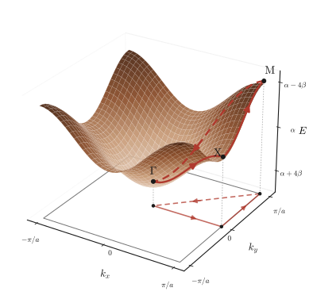
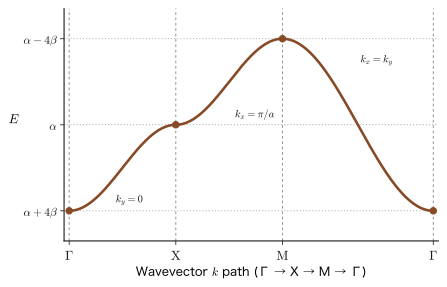
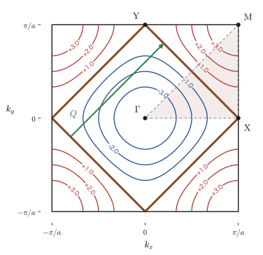
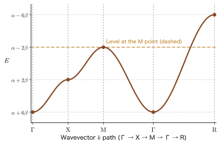
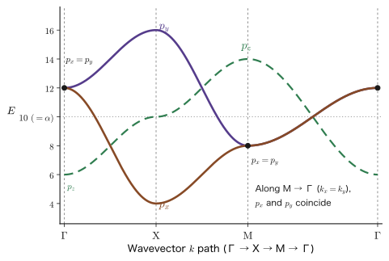
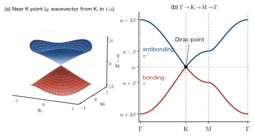

Chapter 42From Molecular Orbitals to Crystal Bands (2) — Band Diagrams of Two- and Three-Dimensional Lattices and Bands of p Orbitals
In the previous chapter we learned that when atoms are lined up in a row, the energy $\alpha$ of each single atomic orbital spreads into a band of width $4\abs{\beta}$, and that this energy can be written as a function of the wavenumber $k$ as $E(k)=\alpha+2\beta\cos ka$ (Chapter 41, Section 41.2). In one dimension, $k$ is a single real number, so $E(k)$ could be drawn as a single curve. Real crystals, however, are made of two-dimensional layers (the carbon layers of graphite, the $\mathrm{CuO_2}$ planes of copper oxides) or three-dimensional lattices (Si, perovskite oxides). In two dimensions the wavenumber is a pair of real numbers $\bm{k}=(k_x,k_y)$, and in three dimensions it is a triple, so $E(\bm{k})$ becomes a surface or a hypersurface in four-dimensional space and cannot be drawn as it stands. The horizontal axis “$\Gamma$–X–M–$\Gamma$” that one always sees in papers on band-structure calculations is the standard answer to this difficulty. That is, we choose a few special points of high symmetry, cut out $E(\bm{k})$ along the path connecting them, and draw it as a single curve. In this chapter we check the meaning of this convention from scratch, using the concrete examples of the square lattice and the simple cubic lattice.
Another new topic is the kind of orbital. Because an $s$ orbital is spherically symmetric, there was only one way for it to overlap with the neighboring atom, regardless of orientation ($\beta$). A $p$ orbital has an orientation, so the overlap differs between the case in which two orbitals overlap along the bond axis ($\sigma$-type) and the case in which they overlap side by side, perpendicular to the bond axis ($\pi$-type). As a result, $p_x$, $p_y$, and $p_z$, which were threefold degenerate in an isolated atom, become three separate bands in the crystal, and at the $\Gamma$ point they split into a nondegenerate level ($p_z$) and a twofold degenerate level ($p_x$, $p_y$). This is the same kind of phenomenon as the splitting into $t_{2g}$ and $e_g$ in the ligand field theory that we study in Part VIII, in that the degeneracy is lifted by symmetry. Within the scope of quantum mechanics, it is the same mechanism as the degeneracy of the eigenstates $(n_x,n_y)$ and $(n_y,n_x)$ of a square two-dimensional box (Chapter 10, Section 10.3). The difference is that the electron wave takes the form $e^{i\bm{k}\cdot\bm{R}}$, which changes its sign from lattice site to lattice site, and that the energy is periodic in $\bm{k}$ (the bandwidth is finite, and there are regions in which the mass is negative).
In the second half of this chapter we practice reading physical properties off the band diagram. The van Hove singularity of the density of states appears as a logarithmic divergence in two dimensions and as a kink in three dimensions. Whether a transition is “direct or indirect” is a property that decides the choice of materials for light-emitting devices and solar cells, and it tends to be thought that the presence or absence of inversion symmetry of the crystal is the deciding factor. We shall check, with examples of real semiconductors, that this is not so. Finally, as an advanced topic, we treat the honeycomb lattice and see that the bands of a single layer of graphite (graphene) have the same conical shape as the massless Dirac equation (Part XI).
- Extending the one-dimensional Bloch sum to the square lattice and deriving $E(k_x,k_y)=\alpha+2\beta\,(\cos k_xa+\cos k_ya)$ from the average energy of a linear combination of $N^2$ atomic orbitals (periodic boundary conditions, orthogonality, the sign of the complex conjugate of the phase factor)
- Explaining the first Brillouin zone, the positions of the high-symmetry points $\Gamma$, X, M (and R in three dimensions), and why the path $\Gamma\to\mathrm{X}\to\mathrm{M}\to\Gamma$ is chosen, and being able to read a single curve off the surface $E(\bm{k})$ of the band diagram
- Finding the energies at the high-symmetry points of the two- and three-dimensional bands and the bandwidth $2z\abs{\beta}$ ($z$ is the number of nearest-neighbor atoms); the half-filled Fermi surface $\abs{k_x}+\abs{k_y}=\pi/a$ and nesting
- Van Hove singularities of the density of states: a $1/\sqrt{\ }$ divergence at the band edges in one dimension; a step at the band edges and a logarithmic divergence at the saddle points in two dimensions; a $\sqrt{\ }$ onset at the band edges and kinks in three dimensions
- Deriving the three bands $E_{p_x}$, $E_{p_y}$, $E_{p_z}$ from the two kinds of overlap of $p$ orbitals, $\beta_\sigma$ and $\beta_\pi$, and explaining the position of the lowest point of each band by the arrangement of phases (bonding and antibonding)
- Understanding the splitting at the $\Gamma$ point into a nondegenerate level and a twofold degenerate level as the lifting of a degeneracy by symmetry, and describing its correspondence with ligand field theory
- Explaining the difference between direct and indirect transitions and, by giving counterexamples, why the idea that “if there is no inversion symmetry, the transition becomes indirect” is not correct
- The bands $E=\alpha\pm\abs{\beta}\abs{f(\bm{k})}$ of the honeycomb lattice, and the Dirac cone at the K point and its velocity $v_{\mathrm F}=3\abs{\beta}a_{\mathrm{cc}}/2\hbar$
Source notes: the pages that deal with LCAO in Yasuhide Mochizuki's “Physics Notes: Quantum Mechanics” (handwritten lecture notes): the LCAO theory of the square lattice, the band diagram of a two-dimensional crystal, and the band diagram of $p$ orbitals.
42.1 LCAO on a Square Lattice — The Two-Dimensional Bloch Sum
42.1.1 Review: the one-dimensional chain and the Hückel approximation
First we review the results of the previous chapter in the form in which we will use them in this chapter. Suppose that $N$ atoms are lined up in a one-dimensional chain with lattice constant $a$, and that an $s$-type atomic orbital $\phi_n(x)$ is attached to the $n$th atom (at position $x_n=(n-1)a$). We denote by $\hat{H}$ the effective Hamiltonian felt by a single electron in the crystal. It is the sum of the kinetic energy and the potential created by all the atoms; the interaction with the other electrons is regarded as having been folded into the one-electron effective potential. We express the electron's wave function as a linear combination of atomic orbitals (LCAO) and evaluate the matrix elements in the Hückel approximation (Chapter 40):
- Orbitals of different atoms are orthogonal, and each orbital is normalized: $\int\phi_{n'}^*\phi_n\,\dd x=\delta_{n'n}$ (the overlap integral is neglected).
- We take $\int\phi_n^*\hat{H}\phi_n\,\dd x=\alpha$ (a value close to the level of an isolated atom), $\int\phi_{n\pm1}^*\hat{H}\phi_n\,\dd x=\beta$ between nearest-neighbor atoms, and $0$ otherwise.
Then the average energy of the sum $\psi_k=\sum_{n=1}^{N}e^{i(n-1)ka}\phi_n$, to which the phase factor $e^{i(n-1)ka}$ has been attached, is $E_k=\alpha+2\beta\cos ka$ (previous chapter). Here $\alpha$ and $\beta$ are parameters of the Hückel method and are unrelated to the spin functions of the electron ($\alpha=\ket{\uparrow}$, $\beta=\ket{\downarrow}$). $\beta$ is the strength of the bond when two neighboring orbitals overlap in phase; since the energy of the electron is lowered when the orbitals overlap in the region where the electron feels the attraction of the atomic nuclei, $\beta\lt0$ for $s$ orbitals. That is, $k=0$ (all atoms in phase) is the bonding orbital with the lowest energy $\alpha+2\beta$, and $k=\pm\pi/a$ (out of phase with the neighbor) is the antibonding orbital with the highest energy $\alpha-2\beta$. In the companion volumes “Density Functional Theory” (AD 07) and “Solid-State Physics” (AD 06), the hopping $t=-\beta\gt0$ is used and the energy is written $E=\alpha-2t\cos ka$. In this book as well, to make the meaning of the sign easy to see, we switch to the notation $t=-\beta=\abs{\beta}$ where necessary.
42.1.2 The square lattice and the two-dimensional Bloch sum
Next we consider a square lattice in which the atoms are arranged with spacing $a$ in both the $x$ and $y$ directions. We write the position of the lattice site that is the $n$th in the $x$ direction and the $m$th in the $y$ direction ($n,m=1,2,\dots,N$) as $\bm{R}_{nm}=\bigl((n-1)a,\ (m-1)a\bigr)$, and the $s$-type atomic orbital attached to that atom as $\phi_{nm}(x,y)$ (Figure 42.1). If we write $\phi_0(x,y)$ for the $s$ orbital of an isolated atom (centered at the origin), then $\phi_{nm}(x,y)=\phi_0\bigl(x-(n-1)a,\ y-(m-1)a\bigr)$; that is, it is $\phi_0$ translated to $\bm{R}_{nm}$. There are $N^2$ lattice sites in all.
As in the one-dimensional case, we build the wave function by multiplying each atomic orbital by a phase factor and adding them up. A state with wavenumber $\bm{k}=(k_x,k_y)$ is a state in which the phase advances by $k_xa$ (in the $x$ direction) and by $k_ya$ (in the $y$ direction) each time we step to the neighboring atom:
Definition 42.1: The two-dimensional Bloch sum
The sum obtained by multiplying the orbital $\phi_{nm}$ at lattice site $(n,m)$ of the square lattice by the phase factor $e^{i(n-1)k_xa}e^{i(m-1)k_ya}=e^{i\bm{k}\cdot\bm{R}_{nm}}$ and summing over all lattice sites,
\begin{equation} \psi_{k_x,k_y}(x,y)=\sum_{m=1}^{N}\sum_{n=1}^{N}e^{i(n-1)k_xa}\,e^{i(m-1)k_ya}\,\phi_{nm}(x,y) \label{eq:42-bloch} \end{equation}is called the Bloch sum for the wavenumber $\bm{k}=(k_x,k_y)$.
The phase factor used here is a constant (a complex number) fixed for each lattice site and does not depend on $x,y$. Also, $\psi_{k_x,k_y}$ in Eq. \eqref{eq:42-bloch} is the wave function of a single electron (the two-dimensional version of $\psi_k$ in the previous chapter). The atomic orbital localized at lattice site $(n,m)$ is written $\phi_{nm}$.
Intuition: The Bloch sum is “a wave given by $e^{i\bm{k}\cdot\bm{r}}$ multiplied by a function with the period of the lattice”
The allowed values of $\bm{k}$ are determined by how we treat the edges of the crystal. If we impose a boundary condition under which the electron is reflected at the edges, only the atoms at the edges of the crystal have fewer neighbors, and the equations become messy. So we usually impose periodic boundary conditions (Born–von Kármán boundary conditions), under which we return to the original lattice site after $N$ steps in the $x$ direction. A translation by one lattice constant $a$ in the $x$ direction advances $n\to n+1$, so the periodic boundary condition can be written $\psi(x+Na,y)=\psi(x,y)$; in Eq. \eqref{eq:42-bloch} it becomes the condition that the phase factor returns to its original value after one full turn, $e^{iNk_xa}=1$, that is, the allowed values of the wavenumbers are
\begin{equation} k_x=\frac{2\pi}{a}\cdot\frac{j_x}{N},\qquad k_y=\frac{2\pi}{a}\cdot\frac{j_y}{N}\qquad(j_x,j_y\ \text{are integers}) \label{eq:42-kquant} \end{equation}(Since $k_x=2\pi j_x/(Na)$, this is the same as the equation for the one-dimensional case. To distinguish these integers from the lattice-site indices $n$ and $m$, we have written them as $j_x$ and $j_y$.) Because $k_x$ and $k_x+2\pi/a$ represent the same state, the independent states are the $N$ values $j_x=-N/2,\dots,N/2-1$ (for even $N$) within $-\pi/a\le k_x\lt\pi/a$, and likewise $N$ values in the $y$ direction, so there are $N^2$ in all. This agrees with the number of atomic orbitals, $N^2$ (the linear combinations built from $N^2$ orbitals number $N^2$).
This $\psi$ does indeed satisfy Bloch's theorem. Consider the function shifted by $a$ in the $x$ direction. Since $\phi_{nm}(x+a,y)=\phi_{n-1,m}(x,y)$, we have
$$ \psi(x+a,y)=\sum_{m,n}e^{i(n-1)k_xa}e^{i(m-1)k_ya}\phi_{n-1,m}(x,y)=e^{ik_xa}\sum_{m,n}e^{i(n-2)k_xa}e^{i(m-1)k_ya}\phi_{n-1,m}(x,y)=e^{ik_xa}\,\psi(x,y) $$In the last equality, we took $n-1$ as the new summation index and, using the periodic boundary condition, identified the term with $n=1$ with the term with $n=N+1$. Similarly, $\psi(x,y+a)=e^{ik_ya}\psi(x,y)$. In general, a function satisfying $\psi(\bm{r}+\bm{R})=e^{i\bm{k}\cdot\bm{R}}\psi(\bm{r})$ can be written $\psi=e^{i\bm{k}\cdot\bm{r}}u(\bm{r})$ ($u$ is a function with the same period as the lattice). This is Bloch's theorem: the plane wave $e^{i\bm{k}\cdot\bm{r}}$ is modulated by the periodic structure of the atomic orbitals. Indeed, if we rewrite the phase factor of each term in Eq. \eqref{eq:42-bloch} as $e^{i\bm{k}\cdot\bm{R}_{nm}}=e^{i\bm{k}\cdot\bm{r}}\,e^{-i\bm{k}\cdot(\bm{r}-\bm{R}_{nm})}$, we obtain $\psi=e^{i\bm{k}\cdot\bm{r}}u(\bm{r})$ with $u(\bm{r})=\sum_{n,m}e^{-i\bm{k}\cdot(\bm{r}-\bm{R}_{nm})}\phi_{nm}(\bm{r})$, which shows that $u$ has the period of the lattice. There is also a convention that writes each term of the Bloch sum in the form “plane wave times periodic part,” $e^{ik_xx}e^{ik_yy}u(x,y)$, but the content of the Bloch sum—multiply by phase factors and sum over all lattice sites—is the same. In Solid-State Physics (AD 06), Chapter 16, Section 16.2 (in Japanese), Bloch's theorem is proved using translation operators.
42.1.3 Calculating the average energy
As in the one-dimensional case, we calculate the average energy of one electron in a system of $N^2$ atoms, for the state of wavenumber $\bm{k}$. By the variational principle (Chapter 30), the average energy (the expectation value of the energy) of the wave function $\psi$ is given by
\begin{equation} E_{k_x,k_y}=\frac{\displaystyle\iint\psi_{k_x,k_y}^{*}\,\hat{H}\,\psi_{k_x,k_y}\,\dd x\,\dd y}{\displaystyle\iint\psi_{k_x,k_y}^{*}\,\psi_{k_x,k_y}\,\dd x\,\dd y} \label{eq:42-Rayleigh} \end{equation}The denominator is a factor that makes it unnecessary for $\psi$ to be normalized. Below, the integrals are $\iint\dd x\,\dd y$ over the whole plane. The integral can also be written in Dirac notation, as in $\mel{\psi}{\hat{H}}{\psi}$, but here we carry out the calculation in the form of the integral. What follows concerns the one-electron effective Hamiltonian; when there are $N^2$ electrons, by the Pauli exclusion principle we fill these levels from the bottom, two electrons at a time (Section 42.2.4).
Derivation: $E_{k_x,k_y}=\alpha+2\beta(\cos k_xa+\cos k_ya)$
Step 1: $\hat{H}\psi$ in the numerator. The phase factor $e^{i(n-1)k_xa}e^{i(m-1)k_ya}$ in Eq. \eqref{eq:42-bloch} does not contain the variables $x,y$, so it is a constant. Since $\hat{H}$ is a linear operator made up of differentiations and multiplications with respect to $x,y$, constants and sums can be taken outside $\hat{H}$, and $\hat{H}$ acts only on $\phi_{nm}$:
\begin{equation} \begin{aligned} \hat{H}\psi_{k_x,k_y} &=\hat{H}\sum_{m=1}^{N}\sum_{n=1}^{N}e^{i(n-1)k_xa}\,e^{i(m-1)k_ya}\,\phi_{nm}(x,y) \\ &=\sum_{m=1}^{N}\sum_{n=1}^{N}e^{i(n-1)k_xa}\,e^{i(m-1)k_ya}\,\hat{H}\phi_{nm}(x,y) \end{aligned} \label{eq:42-Hpsi} \end{equation}Step 2: $\psi^*$. Taking the complex conjugate, the phase factor of each term in the sum changes as $e^{i\theta}\to e^{-i\theta}$, and the atomic orbitals change as $\phi_{nm}\to\phi_{nm}^*$. If we write the summation indices of the Bloch sum as $(n',m')$ to distinguish them from $(n,m)$, we obtain
\begin{equation} \psi_{k_x,k_y}^{*}=\sum_{m'=1}^{N}\sum_{n'=1}^{N}e^{-i(n'-1)k_xa}\,e^{-i(m'-1)k_ya}\,\phi_{n'm'}^{*}(x,y) \label{eq:42-psistar} \end{equation}The exponent of the phase factor on the complex-conjugate side carries a minus sign. If we forget this and write $e^{+i(n'-1)k_xa}$, then in the later calculation an exponent in the form of a sum, as in $e^{ik_xa(n+n'-2)}$, appears, and the phases do not cancel. Also, in the double sum of $\psi^*\psi$, it is essential to use different letters for the summation indices on the $\psi$ side and on the $\psi^*$ side ($n,m$ and $n',m'$). If the same letters are used, the terms with $n\ne n'$ drop out.
Step 3: Denominator (normalization). The product of Eq. \eqref{eq:42-psistar} and $\psi$ is a sum of $N^4$ terms:
$$ \psi^{*}_{k_x,k_y}\psi_{k_x,k_y}=\left(\sum_{m'=1}^{N}\sum_{n'=1}^{N}e^{-i(n'-1)k_xa}e^{-i(m'-1)k_ya}\phi_{n'm'}^{*}\right)\left(\sum_{m=1}^{N}\sum_{n=1}^{N}e^{i(n-1)k_xa}e^{i(m-1)k_ya}\phi_{nm}\right) $$For the integral of each term, we use the orthonormality of the atomic orbitals (Hückel approximation). Orbitals at different lattice sites $(n',m')\ne(n,m)$ are orthogonal, and an orbital at the same lattice site is normalized:
\begin{equation} \iint\phi_{n'm'}^{*}\,\phi_{nm}\,\dd x\,\dd y=\delta_{n'n}\,\delta_{m'm} \label{eq:42-orth} \end{equation}In particular, if we fix $m'=m$, then $\iint\phi_{n'm}^*\phi_{nm}\,\dd x\,\dd y=\delta_{n'n}$, and if we fix $n'=n$, then $\iint\phi_{nm'}^*\phi_{nm}\,\dd x\,\dd y=\delta_{m'm}$. Using Eq. \eqref{eq:42-orth}, what survives are the $N^2$ terms with $(n',m')=(n,m)$, and the phase factor of each is $e^{-i(n-1)k_xa}e^{i(n-1)k_xa}=1$, so we obtain
\begin{equation} \iint\psi_{k_x,k_y}^{*}\psi_{k_x,k_y}\,\dd x\,\dd y=\sum_{m=1}^{N}\sum_{n=1}^{N}1=N^2 \label{eq:42-norm} \end{equation}This is the value of the denominator.
Step 4: Numerator (matrix elements of the Hamiltonian). From Eq. \eqref{eq:42-Hpsi} and Eq. \eqref{eq:42-psistar}, the numerator is given by
$$ \iint\psi^{*}\hat{H}\psi\,\dd x\,\dd y=\sum_{m',n'}\sum_{m,n}e^{-i(n'-1)k_xa}e^{-i(m'-1)k_ya}\,e^{i(n-1)k_xa}e^{i(m-1)k_ya}\iint\phi_{n'm'}^{*}\hat{H}\phi_{nm}\,\dd x\,\dd y $$The matrix elements in the Hückel approximation are $\alpha$ for the same lattice site, $\beta$ between lattice sites adjacent in the $x$ or $y$ direction, and $0$ otherwise:
\begin{equation} \iint\phi_{n'm'}^{*}\,\hat{H}\,\phi_{nm}\,\dd x\,\dd y=\begin{cases}\alpha & \bigl((n',m')=(n,m)\bigr)\\ \beta & \bigl((n',m')=(n\pm1,m)\ \text{or}\ (n,m\pm1)\bigr)\\ 0 & (\text{otherwise})\end{cases} \label{eq:42-Hmat} \end{equation}So, for a fixed $(n,m)$, we sum over $(n',m')$. Following the same idea as in the one-dimensional case, we first fix $m'=m$ and look only at the neighbors in the $x$ direction (the term with $n'=n$ and the terms with $n'=n\pm1$). Then the phase factor in the $y$ direction, $e^{-i(m-1)k_ya}e^{i(m-1)k_ya}=1$, disappears, and the calculation is essentially the same as that for a one-dimensional chain. For the neighbors $n'=n\pm1$ in the $x$ direction, the phase factor becomes $e^{-i(n\pm1-1)k_xa}e^{i(n-1)k_xa}=e^{\mp ik_xa}$, and the sum over the two neighbors is $\beta\,(e^{ik_xa}+e^{-ik_xa})=2\beta\cos k_xa$. Next, if we fix $n'=n$ and look at the neighbors $m'=m\pm1$ in the $y$ direction, the same reasoning gives $2\beta\cos k_ya$. The term for the site itself, $(n',m')=(n,m)$, has phase factor 1 and gives $\alpha$. Therefore, for each $(n,m)$ we have
$$ \alpha+\beta\left(e^{ik_xa}+e^{-ik_xa}\right)+\beta\left(e^{ik_ya}+e^{-ik_ya}\right)=\alpha+2\beta\left(\cos k_xa+\cos k_ya\right) $$and since this is the same value for all $N^2$ pairs $(n,m)$, we obtain
\begin{equation} \iint\psi_{k_x,k_y}^{*}\,\hat{H}\,\psi_{k_x,k_y}\,\dd x\,\dd y=N^2\left\{\alpha+2\beta\left(\cos k_xa+\cos k_ya\right)\right\} \label{eq:42-num} \end{equation}Here, thanks to the periodic boundary condition (the neighbor of $n=N$ is $n=1$), we have assumed that every lattice site has all four neighbors. In a finite lattice with edges, a correction is added because the atoms at the edges have fewer neighbors, but this is only $O(1/N)$ of the whole.
Step 5: Division. When Eq. \eqref{eq:42-num} is divided by Eq. \eqref{eq:42-norm}, the $N^2$ cancels, and we obtain
$$ E_{k_x,k_y}=\alpha+2\beta\left(\cos k_xa+\cos k_ya\right) $$This is the desired result.
∎
Theorem 42.1: The s band of the square lattice
The LCAO bands of a square lattice of lattice constant $a$ (one $s$ orbital on each lattice site), in which only the matrix elements between nearest neighbors are taken to be $\beta$, are given by
\begin{equation} E(k_x,k_y)=\alpha+2\beta\left(\cos k_xa+\cos k_ya\right) \label{eq:42-E2d} \end{equation}Here $k_x,k_y$ take the $N^2$ values given by Eq. \eqref{eq:42-kquant}.
42.1.4 Checking and reading the result
Discussion: $\psi$ is an exact eigenfunction, not an “average”
Eq. \eqref{eq:42-Rayleigh} was the mean value (expectation value) of the energy when $\psi$ is regarded as a single trial function. In fact, this $\psi_{k_x,k_y}$ is an exact eigenfunction of the Hückel-approximation $\hat{H}$, and $E_{k_x,k_y}$ is itself the eigenvalue. Let us check this. The coefficients of $\psi=\sum_{n,m}c_{nm}\phi_{nm}$ are $c_{nm}=e^{i(n-1)k_xa}e^{i(m-1)k_ya}$. When $\hat{H}\psi$ is written as a linear combination of the $\phi_{nm}$, the coefficient of $\phi_{nm}$ is, by Eq. \eqref{eq:42-Hmat},
$$ \alpha c_{nm}+\beta\left(c_{n+1,m}+c_{n-1,m}+c_{n,m+1}+c_{n,m-1}\right) =c_{nm}\left\{\alpha+\beta\left(e^{ik_xa}+e^{-ik_xa}+e^{ik_ya}+e^{-ik_ya}\right)\right\}=E_{k_x,k_y}\,c_{nm} $$which coincides with $E_{k_x,k_y}c_{nm}$ for all $(n,m)$. That is, $\hat{H}\psi=E_{k_x,k_y}\psi$ holds (within the Hückel approximation). Since the expectation value for an eigenfunction equals the eigenvalue, it is only natural that the value of Eq. \eqref{eq:42-Rayleigh} is the eigenvalue. Moreover, since the Hückel-approximation $\hat{H}$ is the sum of the $\hat{H}$ of the chain in the $x$ direction and the $\hat{H}$ of the chain in the $y$ direction ($\alpha$ is counted only once), it is natural that $E-\alpha$ is the sum of the two one-dimensional bands, $(2\beta\cos k_xa)+(2\beta\cos k_ya)$. The LCAO of the square lattice is, in essence, a product of one-dimensional LCAOs (separation of variables).
Math Tool: Orthogonality of sums and diagonalization of matrices
The orthogonality in Eq. \eqref{eq:42-orth} is the assumption that the atomic orbitals are orthogonal, and is a different thing from the orthogonality of trigonometric functions. On the other hand, the orthogonality $\iint\psi_{\bm{k}'}^*\psi_{\bm{k}}\dd x\dd y=0$ ($\bm{k}'\ne\bm{k}$) between states of wavenumber $\bm{k}$ follows from the sum of the phase factors, $\sum_{n=1}^{N}e^{i(k_x-k_x')(n-1)a}=0$ (the sum of a geometric progression, when $k_x-k_x'$ is a nonzero integer multiple of $2\pi/Na$). This is the discrete version of the orthogonality of trigonometric functions (University Mathematics, Chapter 27, Section 27.1). Also, the reason that the eigenvalue problem of the $N^2\times N^2$ matrix $H$ could be solved in one line using the vector $c_{nm}$ of phase factors is that $H$ is invariant under translations of the lattice, so the eigenvectors of translation (plane waves) are simultaneously eigenvectors of $H$. For the diagonalization of general matrices, see University Mathematics, Chapter 12, Section 12.3.
The procedure used here (build the Bloch sum, and find the average energy using only the orthogonality and the nearest-neighbor matrix elements) can be applied to any lattice and any orbitals. The derivation of the general tight-binding approximation is summarized in Solid-State Physics (AD 06), Chapter 18, Section 18.4 (in Japanese).
Example 42.1: The 16 energies of a $4\times4$ lattice
Consider a square lattice with $N=4$ ($4\times4=16$ lattice sites) under periodic boundary conditions, with $\alpha=0$ and $\beta=-1\ \mathrm{eV}$. Find the allowed wavenumbers $k_x,k_y$, and find the 16 energies and their degeneracies.
Solution. Setting $N=4$ in Eq. \eqref{eq:42-kquant}, we have $k_xa=2\pi j_x/4=\pi j_x/2$ ($j_x=0,1,2,3$; $j_x=3$ is the same as $-1$). The same holds in the $y$ direction. The values of $\cos(\pi j/2)$ for $j=0,1,2,3$ are $1,\,0,\,-1,\,0$. The energy is $E=\alpha+2\beta(\cos k_xa+\cos k_ya)=-2\,(c_x+c_y)\ \mathrm{eV}$ ($c_x=\cos k_xa$, $c_y=\cos k_ya$). Counting the pairs $(c_x,c_y)$:
| $c_x+c_y$ | Pairs $(j_x,j_y)$ | $E$ ($\mathrm{eV}$) | Degeneracy |
|---|---|---|---|
| $2$ | $(0,0)$ | $-4$ | 1 |
| $1$ | $(0,1),(0,3),(1,0),(3,0)$ | $-2$ | 4 |
| $0$ | $(1,1),(1,3),(3,1),(3,3),(0,2),(2,0)$ | $0$ | 6 |
| $-1$ | $(1,2),(3,2),(2,1),(2,3)$ | $+2$ | 4 |
| $-2$ | $(2,2)$ | $+4$ | 1 |
The sum of the degeneracies is $1+4+6+4+1=16$, which agrees with the number of lattice sites. The lowest level $E=-4\ \mathrm{eV}=\alpha+4\beta$ is at $\bm{k}=(0,0)$ (all lattice sites in phase), and the highest level $+4\ \mathrm{eV}=\alpha-4\beta$ is at $k_xa=k_ya=\pi$ ($(j_x,j_y)=(2,2)$; the “checkerboard pattern” in which every site is out of phase with its neighbors). The energy width is $8\ \mathrm{eV}=8\abs{\beta}$, which is the same as the width of the continuous band for $N\to\infty$. Also, the fact that many levels cluster at $E=0$ (the center of the band) will be seen in the density of states in Section 42.4.
42.2 Band Diagram of a Two-Dimensional Crystal — The Path Γ → X → M → Γ
42.2.1 The range of the wavenumber — periodicity and the first Brillouin zone
The expression $E(k_x,k_y)=\alpha+2\beta(\cos k_xa+\cos k_ya)$ obtained in the previous section contains $\cos$, so it is unchanged under $k_x\to k_x+2\pi/a$ and also under $k_y\to k_y+2\pi/a$. This is not an accident. The phase factor $e^{i\bm{k}\cdot\bm{R}_{nm}}=e^{i(n-1)k_xa}e^{i(m-1)k_ya}$ is unchanged even if $k_x$ is shifted by $2\pi/a$, because $e^{i(n-1)\cdot2\pi}=1$, so $\bm{k}$ and $\bm{k}+(2\pi/a)(g_x,g_y)$ ($g_x,g_y$ are integers) represent the same Bloch sum, that is, the same state. Therefore it suffices to consider $\bm{k}$ only inside the square
$$ -\frac{\pi}{a}\le k_x\lt\frac{\pi}{a},\qquad -\frac{\pi}{a}\le k_y\lt\frac{\pi}{a} $$This square is called the first Brillouin zone of the square lattice. It is the two-dimensional version of what in one dimension was the line segment $-\pi/a\le k\lt\pi/a$. Its side has length $2\pi/a$, and dividing its area $(2\pi/a)^2$ by the spacing $(2\pi/Na)^2$ of the allowed values of the wavenumber gives $N^2$, which agrees with the number of states in the previous section.
42.2.2 Why symmetry lets us consider “only the positive part” — irreducible region and high-symmetry points
Even within the first Brillouin zone, we do not need to examine the values of $E(\bm{k})$ everywhere. Because $\cos$ is an even function,
$$ E(-k_x,k_y)=E(k_x,k_y),\qquad E(k_x,-k_y)=E(k_x,k_y),\qquad E(k_y,k_x)=E(k_x,k_y) $$holds. The first two say that $E$ is symmetric between $-\pi/a\le k\le0$ and $0\le k\le\pi/a$; if we consider only the positive part, the negative part is its mirror image. Therefore, for both $k_x$ and $k_y$, it suffices to examine the square $0\le k_x\le\pi/a$, $0\le k_y\le\pi/a$ (one quarter of the first Brillouin zone). The third equation expresses the mirror symmetry about the diagonal, namely that $E$ does not change when $x$ and $y$ are exchanged; it is enough to take only the lower half of the square below its diagonal $k_x=k_y$, that is, the triangle $0\le k_y\le k_x\le\pi/a$ (one eighth of the first Brillouin zone). This triangle is called the irreducible region (also called the irreducible wedge; see Figure 42.2).
Definition 42.2: High-symmetry points $\Gamma$, X, M
In the first Brillouin zone of the square lattice,
$$ \Gamma=(0,\,0),\qquad \mathrm{X}=\left(\frac{\pi}{a},\,0\right),\qquad \mathrm{M}=\left(\frac{\pi}{a},\,\frac{\pi}{a}\right) $$are called the $\Gamma$ point (the center), the X point (the midpoint of a side), and the M point (a vertex), respectively. The point $(0,\pi/a)$ is called the Y point and is equivalent to the X point.
The $\Gamma$ used here is a symbol for the origin of wavenumber space. In Part VIII (Chapter 45), the symbol $\Gamma_i$ for an irreducible representation of a group appears, but it is something different (in solid-state physics, which deals with the symmetry of crystals, $\Gamma$, X, M, and R are used almost exclusively as symbols for points in wavenumber space).
Then why do we not scan the whole irreducible region, but examine only the path $\Gamma\to\mathrm{X}\to\mathrm{M}\to\Gamma$ along the sides of the triangle? The reason is that, for the $s$ band of this chapter, the extrema and saddle points of the band appear only at points of high symmetry. The slope (gradient) of $E(\bm{k})$ is $\nabla_{\bm{k}}E=2\beta\,(-a\sin k_xa,\ -a\sin k_ya)$, and this vanishes only when $\sin k_xa=\sin k_ya=0$, that is, only when $k_x,k_y\in\{0,\pi/a\}$. Within the first Brillouin zone, the points that satisfy this are only the four points $\Gamma$, X, Y, and M, and since Y is equivalent to X, there are three independent stationary points: $\Gamma$, X, and M. As we will see later, $\Gamma$ is a minimum (the valley bottom), M is a maximum (the peak top), and X is a saddle point. The path $\Gamma\to\mathrm{X}\to\mathrm{M}\to\Gamma$ passes through all three of these points and goes once around the three sides of the irreducible region. From it we can read off exactly the range of values that $E(\bm{k})$ can take, together with the minimum value, the maximum value, and the value at the saddle point. Note, however, that this is a property of this model. In a general crystal, extrema also appear away from the high-symmetry points, as in the bottom of the conduction band of Si (on the $\Gamma$–X line, at a position about 0.85 of the way from $\Gamma$ to X; Example 42.11), so in an actual band-structure calculation one draws the whole length along the symmetry lines.
42.2.3 From a surface to a single curve — the band diagram
Let us find the values at $\Gamma$, X, and M. Since $\cos0=1$ and $\cos\pi=-1$,
\begin{equation} \begin{aligned} E(\Gamma)&=\alpha+2\beta(1+1)=\alpha+4\beta \\ E(\mathrm{X})&=\alpha+2\beta(-1+1)=\alpha \\ E(\mathrm{M})&=\alpha+2\beta(-1-1)=\alpha-4\beta \end{aligned} \label{eq:42-pts2d} \end{equation}Since $\beta\lt0$, $\Gamma$ is the lowest ($\alpha+4\beta=\alpha-4\abs{\beta}$), M is the highest ($\alpha-4\beta=\alpha+4\abs{\beta}$), and X lies exactly at the center of the band, $\alpha$. As shown in Figure 42.3, this result corresponds to the heights of the valley bottom, the peak top, and the saddle point when $E(k_x,k_y)$ is drawn as a surface.
Illustration 42.1: Energies at the high-symmetry points and the bandwidth
The values of $E$ at $\Gamma$, X, and M are $\alpha+4\beta$, $\alpha$, and $\alpha-4\beta$. For example, if $\abs{\beta}=1\ \mathrm{eV}$, then measured from $\alpha$ they are $-4\ \mathrm{eV}$, $0$, and $+4\ \mathrm{eV}$, and the bandwidth (the difference between the highest and the lowest) is $E(\mathrm{M})-E(\Gamma)=-8\beta=8\abs{\beta}=8\ \mathrm{eV}$. In the square lattice, one atom has $z=4$ nearest-neighbor atoms, so the bandwidth can be written $2z\abs{\beta}$ ($8\abs{\beta}$ for $z=4$). In one dimension we had $z=2$ and a width of $4\abs{\beta}$, so the bandwidth grows in proportion to the number of neighbors.

Drawing $E(\bm{k})$ as a surface in this way shows its overall picture, but it is hard to read off what each height is, and in three dimensions it cannot be drawn at all. So instead of drawing the whole surface, we take out only the cross section along the red path and draw a graph with the length along the path on the horizontal axis and the energy on the vertical axis. This is the band diagram. The energy on the path is obtained as follows, depending on how $k_x,k_y$ are substituted.
Formula 42.1: The $s$ band on the path $\Gamma\to\mathrm{X}\to\mathrm{M}\to\Gamma$
Denoting the wavenumber by $\kappa$ ($0\le\kappa\le\pi/a$), we obtain the following:
\begin{equation} \begin{aligned} \Gamma\to\mathrm{X}\ :\ &\bm{k}=(\kappa,0),\qquad E=\alpha+2\beta\,(\cos\kappa a+1),\\ \mathrm{X}\to\mathrm{M}\ :\ &\bm{k}=(\pi/a,\kappa),\qquad E=\alpha+2\beta\,(\cos\kappa a-1),\\ \mathrm{M}\to\Gamma\ :\ &\bm{k}=(\kappa,\kappa)\ \ (\kappa:\pi/a\to0),\qquad E=\alpha+4\beta\cos\kappa a. \end{aligned} \label{eq:42-path2d} \end{equation}Each expression is obtained by substituting $k_y=0$, $k_x=\pi/a$, and $k_x=k_y$ into Eq. \eqref{eq:42-E2d} (for the last one, $2\beta(\cos\kappa a+\cos\kappa a)=4\beta\cos\kappa a$). The distances along the path are $\pi/a$ for $\Gamma\to\mathrm{X}$, $\pi/a$ for $\mathrm{X}\to\mathrm{M}$, and $\sqrt2\pi/a$ for $\mathrm{M}\to\Gamma$, and the standard practice is to draw the horizontal axis of the band diagram in proportion to these lengths (Figure 42.4).

The reason the curve is flat like a shoulder near X in Figure 42.4 can be seen immediately from Eq. \eqref{eq:42-path2d}. On $\Gamma\to\mathrm{X}$ we have $\mathrm{d}E/\mathrm{d}\kappa=-2\beta a\sin\kappa a$, and on $\mathrm{X}\to\mathrm{M}$ it has the same form; at $\kappa=\pi/a$ and at $\kappa=0$ (the position of X) we have $\sin=0$ in both cases. That is, the slope is 0 on both sides of X. At X, $E$ is a saddle point that is close to a maximum in one direction (the $k_x$ direction) and close to a minimum in the other direction (the $k_y$ direction), so viewed along the path it becomes a shoulder where the slope vanishes.
Example 42.2: Numerical table with five points on each segment of the path
Let $\alpha=0$ and $\beta=-1\ \mathrm{eV}$. For the five points $\kappa a=0,\pi/4,\pi/2,3\pi/4,\pi$, find the energies on the three segments of Eq. \eqref{eq:42-path2d}.
Solution. We have $\cos\kappa a=1,\ \tfrac{\sqrt2}{2},\ 0,\ -\tfrac{\sqrt2}{2},\ -1$, and $2\beta=-2\ \mathrm{eV}$ and $4\beta=-4\ \mathrm{eV}$.
- $\Gamma\to\mathrm{X}$: $E=-2(\cos\kappa a+1)$: at $\kappa a=0$ the energy is $-4$, at $\pi/4$ it is $-2(1.7071)=-3.414$, at $\pi/2$ it is $-2$, at $3\pi/4$ it is $-2(0.2929)=-0.586$, and at $\pi$ it is $0$.
- $\mathrm{X}\to\mathrm{M}$: $E=-2(\cos\kappa a-1)=2(1-\cos\kappa a)$: the values are $0,\ 0.586,\ 2,\ 3.414,\ 4$.
- $\mathrm{M}\to\Gamma$: $E=-4\cos\kappa a$. Note, however, that $\kappa$ is moved from $\pi/a$ to $0$, so for $\kappa a=\pi,3\pi/4,\pi/2,\pi/4,0$, in this order, $E=+4,\ +2.828,\ 0,\ -2.828,\ -4$.
| Segment | Start | 1/4 | 1/2 | 3/4 | End |
|---|---|---|---|---|---|
| $\Gamma\to\mathrm{X}$ | $-4$ | $-3.414$ | $-2$ | $-0.586$ | $0$ |
| $\mathrm{X}\to\mathrm{M}$ | $0$ | $0.586$ | $2$ | $3.414$ | $4$ |
| $\mathrm{M}\to\Gamma$ | $+4$ | $+2.828$ | $0$ | $-2.828$ | $-4$ |
All three segments are monotonic: they run from $-4$ to $0$, from $0$ to $4$, and from $4$ to $-4$. This agrees with the curve in Figure 42.4. Note also that the change on either side of X (the value $-0.586$ just before the end of $\Gamma\to\mathrm{X}$ and the value $0.586$ just after the start of $\mathrm{X}\to\mathrm{M}$) is small, which corresponds to the flat part of the shoulder.
42.2.4 Constant-energy lines, the half-filled Fermi surface, and nesting
To grasp the overall shape of the surface from another point of view, it is useful to draw the lines on which $E(k_x,k_y)$ is constant on the first Brillouin zone, like the contour lines of a map (Figure 42.5). Near $\Gamma$ we can expand $E\approx\alpha+4\beta+\abs{\beta}a^2(k_x^2+k_y^2)$, so the constant-energy lines are circles centered at $\Gamma$ (the same as for a free electron in vacuum). As the energy rises, the circles gradually become squarish (toward a rhombus), and at $E=\alpha$ they form a perfect rhombus $\abs{k_x}+\abs{k_y}=\pi/a$. As the energy rises further, the lines now become small circles centered at M (the four corners of the zone), and at the highest energy $\alpha-4\beta$ they shrink to the point M.

Suppose there is one electron per atom (for example, a simplified alkali metal in which each atom contributes one $s$ electron). The number of states in the band, including spin, is $2N^2$, and there are $N^2$ electrons, so the band is filled exactly halfway (half filling). By the Pauli exclusion principle, the electrons fill the levels from the bottom up, two electrons per level, and the last level to be occupied is the Fermi energy $E_{\mathrm F}$. To find this $E_{\mathrm F}$, the symmetry between the top and bottom of the band is useful. If we shift the wavenumber by $\bm{Q}=(\pi/a,\pi/a)$, then $\cos(k_xa+\pi)=-\cos k_xa$ and $\cos(k_ya+\pi)=-\cos k_ya$, so we have
\begin{equation} E(\bm{k}+\bm{Q})-\alpha=-\bigl(E(\bm{k})-\alpha\bigr) \label{eq:42-nesting} \end{equation}This means that the states of energy $\alpha+\varepsilon$ and the states of energy $\alpha-\varepsilon$ are in one-to-one correspondence. Therefore the number of states below $\alpha$ equals the number of states above it, each being $N^2$ (half of the band), and so the $N^2$ electrons occupy exactly the states up to $E_{\mathrm F}=\alpha$. The Fermi surface (the constant-energy line at the Fermi energy) is $E=\alpha$, that is, $\cos k_xa+\cos k_ya=0$. From $\cos k_ya=-\cos k_xa=\cos(\pi-k_xa)$ we get $k_ya=\pm(\pi-k_xa)$ (up to integer multiples of $2\pi$), so that within the first Brillouin zone we have
\begin{equation} \abs{k_x}+\abs{k_y}=\frac{\pi}{a} \label{eq:42-FS} \end{equation}This is the brown rhombus in Figure 42.5.
Discussion: Nesting — the Fermi surface overlaps itself under a translation
By Eq. \eqref{eq:42-nesting}, if we add $\bm{Q}$ to a $\bm{k}$ that satisfies $E(\bm{k})=\alpha$, the result again satisfies $E=\alpha$. That is, the rhombic Fermi surface overlaps itself under the translation by $\bm{Q}=(\pi/a,\pi/a)$ (the green arrow in Figure 42.5 carries the point $(-0.8,-0.2)\pi/a$ on the Fermi surface to the point $(0.2,0.8)\pi/a$, which is again on the Fermi surface). Such a situation, in which the whole Fermi surface coincides exactly with itself under one and the same wavevector $\bm{Q}$, is called nesting (fitting one inside another). In this situation, the states of wavenumber $\bm{k}$ and of wavenumber $\bm{k}+\bm{Q}$ have the same energy $\alpha$ on the Fermi surface, so even an arbitrarily small interaction can mix those two states, and it is energetically favorable for it to open a gap on the Fermi surface (the Peierls transition; for the one-dimensional chain, see Chapter 41, Section 41.9) or to create an antiferromagnetic order in which the spin orientation is opposite to that of the neighbor (a spin density wave). This nesting is the starting point for the fact that, in the Hubbard model of the square lattice (Chapter 59), the half-filled state readily becomes an antiferromagnetic insulator. Moreover, the fact that this $\bm{Q}$ coincides with the wavenumber of the M point corresponds, as in Exercise 42.6 at the end of the chapter, to the opening of a gap through the mixing of exactly $\bm{k}$ and $\bm{k}+\bm{Q}$ in a lattice in which two kinds of atoms are arranged in a checkerboard pattern.
Group velocity and effective mass
The slope and curvature of the band tell us how an electron moves in a crystal. The speed of the center of a wave packet (the group velocity) is $\bm{v}=\dfrac{1}{\hbar}\nabla_{\bm{k}}E$, which is the two-dimensional version of the one-dimensional formula $v=\hbar^{-1}\mathrm{d}E/\mathrm{d}k$ (Chapter 41, Section 41.6). Also, the curvature of the band determines the effective mass through $\dfrac{1}{m^*_{ij}}=\dfrac{1}{\hbar^2}\dfrac{\partial^2E}{\partial k_i\partial k_j}$ (again in the previous chapter). For $E=\alpha-2\abs{\beta}(\cos k_xa+\cos k_ya)$, we have
\begin{equation} \bm{v}=\frac{2\abs{\beta}a}{\hbar}\,\bigl(\sin k_xa,\ \sin k_ya\bigr),\qquad \frac{\partial^2E}{\partial k_x^2}=2\abs{\beta}a^2\cos k_xa,\quad \frac{\partial^2E}{\partial k_y^2}=2\abs{\beta}a^2\cos k_ya,\quad\frac{\partial^2E}{\partial k_x\partial k_y}=0 \label{eq:42-velmass} \end{equation}The diagonal elements of the effective mass are as follows. At $\Gamma$, $\cos=1$ and $m^*=\hbar^2/(2\abs{\beta}a^2)\gt0$ (equal for $x$ and $y$, that is, isotropic). At M, $\cos=-1$ and $m^*=-\hbar^2/(2\abs{\beta}a^2)\lt0$ (a negative mass: when an external force acts, the electron is accelerated in the direction opposite to the force; this corresponds to the fact that states near the top of a band that is not filled with electrons behave like holes). At X, the signs are opposite in the two directions: $m_x^*\lt0$ in the $x$ direction and $m_y^*\gt0$ in the $y$ direction. The character of a saddle point appears as a difference in the sign of the mass.
Example 42.3: Speed of an electron on the Fermi surface
When the $s$ band of a square lattice is half filled, find the group velocity $\bm{v}$ of the state $\bm{k}=(\pi/2a,\pi/2a)$ and its magnitude. Take $\abs{\beta}=1.0\ \mathrm{eV}$ and $a=2.5\ \text{Å}$.
Solution. First, we confirm that this point lies on the Fermi surface. We have $\abs{k_x}+\abs{k_y}=\pi/2a+\pi/2a=\pi/a$, which satisfies Eq. \eqref{eq:42-FS}. Substituting $\sin(\pi/2)=1$ into Eq. \eqref{eq:42-velmass}, we obtain
$$ \bm{v}=\frac{2\abs{\beta}a}{\hbar}(1,1),\qquad \abs{\bm{v}}=\sqrt2\,\frac{2\abs{\beta}a}{\hbar} $$Numerically, using $\hbar=6.582\times10^{-16}\ \mathrm{eV\,s}$ and $a=2.5\times10^{-10}\ \mathrm{m}$, we have
$$ \frac{2\abs{\beta}a}{\hbar}=\frac{2\times1.0\ \mathrm{eV}\times2.5\times10^{-10}\ \mathrm{m}}{6.582\times10^{-16}\ \mathrm{eV\,s}}=7.60\times10^{5}\ \mathrm{m/s},\qquad \abs{\bm{v}}=\sqrt2\times7.60\times10^{5}\ \mathrm{m/s}=1.07\times10^{6}\ \mathrm{m/s} $$The direction is $(1,1)$, that is, perpendicular to the Fermi surface (one side of the rhombus, $k_x+k_y=\pi/a$) and pointing outward (the direction in which $E$ increases, perpendicular to the constant-energy line). The speed is about $0.4\%$ of the speed of light, and it is of the same order of magnitude as the Fermi velocity of metals (about $10^6\ \mathrm{m/s}$). Note also that $\abs{\bm{v}}$ is largest at this point, where $\sin^2k_xa+\sin^2k_ya$ is maximal (the maximum within the first Brillouin zone).
Example 42.4: Effective mass at the bottom of the band
For the $s$ band of a square lattice with $\abs{\beta}=1.0\ \mathrm{eV}$ and $a=2.5\ \text{Å}$, find the effective mass $m^*$ at the $\Gamma$ point as a multiple of the electron mass $m_{\mathrm e}$. Also, with the same parameters, how does $m^*$ change if $a$ is shortened by 20% (with $\beta$ held constant)?
Solution. From Eq. \eqref{eq:42-velmass}, $\partial^2E/\partial k_x^2=2\abs{\beta}a^2$, so $m^*=\hbar^2/(2\abs{\beta}a^2)$. Expressing this in terms of the free-electron mass, $m^*/m_{\mathrm e}=\dfrac{\hbar^2}{2m_{\mathrm e}}\cdot\dfrac{1}{\abs{\beta}a^2}$, and using $\hbar^2/(2m_{\mathrm e})=3.810\ \mathrm{eV\,\text{Å}^2}$, we obtain
$$ \frac{m^*}{m_{\mathrm e}}=\frac{3.810\ \mathrm{eV\,\text{Å}^2}}{1.0\ \mathrm{eV}\times(2.5\ \text{Å})^2}=\frac{3.810}{6.25}=0.61 $$If $a$ is shortened by 20% ($a=2.0\ \text{Å}$), then $m^*/m_{\mathrm e}=3.810/4.0=0.95$, so the mass becomes heavier ($m^*\propto a^{-2}$). In real materials, however, when the interatomic spacing shrinks, the orbital overlap increases and $\abs{\beta}$ grows sharply, so $m^*$ often becomes lighter instead (the bandwidth widens).
Related simulator: in the tab “⑤ 2D square lattice (s, p, d, f)” of From Molecular Orbitals to Bands, you can see the band diagram of this section and the arrangement of real-space phases corresponding to positions along the path.
42.3 Bands of a Three-Dimensional Crystal — The Simple Cubic Lattice
42.3.1 Extension to three dimensions — the simple cubic lattice
Consider the simple cubic lattice in which atoms are arranged with spacing $a$ in all three directions. Let the lattice sites be $\bm{R}_{nml}=\bigl((n-1)a,(m-1)a,(l-1)a\bigr)$ ($n,m,l=1,\dots,N$, $N^3$ sites in all), and attach an $s$-type atomic orbital $\phi_{nml}$ to each lattice site. The calculation can be carried out in exactly the same way as in two dimensions. The only differences are that the sums carry three indices and that the nearest atoms are the 6 atoms at $\pm x$, $\pm y$, $\pm z$ (coordination number $z=6$).
Derivation: The $s$ band of the simple cubic lattice
Let the Bloch sum be $\psi_{\bm{k}}=\sum_{n,m,l=1}^{N}e^{i(n-1)k_xa}e^{i(m-1)k_ya}e^{i(l-1)k_za}\phi_{nml}$. From the periodic boundary conditions, $k_x,k_y,k_z\in\dfrac{2\pi}{Na}\times(\text{integer})$. We adopt the Hückel approximation (orthogonality and nearest-neighbor matrix elements) in the form
$$ \iiint\phi_{n'm'l'}^*\phi_{nml}\,\dd x\dd y\dd z=\delta_{n'n}\delta_{m'm}\delta_{l'l},\qquad \iiint\phi_{n'm'l'}^*\hat{H}\phi_{nml}\,\dd x\dd y\dd z=\begin{cases}\alpha&(\text{the same lattice point})\\ \beta&(\text{the 6 nearest neighbors})\\ 0&(\text{otherwise})\end{cases} $$As in two dimensions, the normalization integral keeps only the terms that match, giving $\iiint\psi^*\psi=N^3$. For the numerator of the energy, each lattice site $(n,m,l)$ contributes $\alpha$ from the site itself, $\beta(e^{ik_xa}+e^{-ik_xa})=2\beta\cos k_xa$ from its neighbors at $\pm x$, $2\beta\cos k_ya$ from its neighbors at $\pm y$, and $2\beta\cos k_za$ from its neighbors at $\pm z$; since this is the same for all $N^3$ lattice sites, the numerator is $N^3\{\alpha+2\beta(\cos k_xa+\cos k_ya+\cos k_za)\}$. It remains only to divide this by $N^3$.
∎
Theorem 42.2: The $s$ band of the simple cubic lattice
\begin{equation} E(k_x,k_y,k_z)=\alpha+2\beta\left(\cos k_xa+\cos k_ya+\cos k_za\right) \label{eq:42-E3d} \end{equation}The rule is a simple one: in $1$ dimension there is one $\cos$, in two dimensions there are two, and in three dimensions there are three, so each time the dimension increases by one, just one more term $2\beta\cos k_ja$ is added. For a $d$-dimensional hypercubic lattice as well, $E=\alpha+2\beta\sum_{j=1}^{d}\cos k_ja$; the lowest energy is $\alpha+2d\beta$ at $\Gamma$, and the highest energy is $\alpha-2d\beta$ at the point where each component is $\pi/a$, so the bandwidth is $4d\abs{\beta}$, which, using the coordination number $z=2d$, equals $2z\abs{\beta}$.
42.3.2 High-symmetry points and the band diagram in three dimensions
The first Brillouin zone in three dimensions is a cube of side $2\pi/a$, $-\pi/a\le k_x,k_y,k_z\lt\pi/a$. Adding the vertex R of the cube to $\Gamma$, X, M of two dimensions gives four high-symmetry points (Figure 42.6):
$$ \Gamma=(0,0,0),\quad \mathrm{X}=\left(\frac{\pi}{a},0,0\right),\quad \mathrm{M}=\left(\frac{\pi}{a},\frac{\pi}{a},0\right),\quad \mathrm{R}=\left(\frac{\pi}{a},\frac{\pi}{a},\frac{\pi}{a}\right) $$That is, $\Gamma$ is the center of the cube, X is the center of a face, M is the midpoint of an edge, and R is a vertex. In that each component is either $0$ or $\pi/a$, the pattern is the same as for $\Gamma$, X, M in two dimensions; the points where the number of components equal to $\pi/a$ is 0, 1, 2, 3 correspond to $\Gamma$, X, M, R, respectively.
Substituting into Eq. \eqref{eq:42-E3d}, and noting that each $\cos$ equals either $+1$ or $-1$, we find that the energy at each point is given by
\begin{equation} \begin{aligned} E(\Gamma)&=\alpha+6\beta,\qquad E(\mathrm{X})=\alpha+2\beta(-1+1+1)=\alpha+2\beta,\\ E(\mathrm{M})&=\alpha+2\beta(-1-1+1)=\alpha-2\beta,\qquad E(\mathrm{R})=\alpha+2\beta(-1-1-1)=\alpha-6\beta \end{aligned} \label{eq:42-pts3d} \end{equation}(Since $\beta\lt0$, $\Gamma$ is the lowest and R is the highest.) As in two dimensions, the expressions along the path are obtained by substituting $k_x,k_y,k_z$ along the path.
Formula 42.2: The $s$ band along the path $\Gamma\to\mathrm{X}\to\mathrm{M}\to\Gamma\to\mathrm{R}$
With $0\le\kappa\le\pi/a$,
\begin{equation} \begin{aligned} \Gamma\to\mathrm{X}\ :\ &\bm{k}=(\kappa,0,0),\qquad E=\alpha+2\beta\,(\cos\kappa a+2),\\ \mathrm{X}\to\mathrm{M}\ :\ &\bm{k}=(\pi/a,\kappa,0),\qquad E=\alpha+2\beta\cos\kappa a,\\ \mathrm{M}\to\Gamma\ :\ &\bm{k}=(\kappa,\kappa,0)\ \ (\kappa:\pi/a\to0),\qquad E=\alpha+2\beta\,(2\cos\kappa a+1),\\ \Gamma\to\mathrm{R}\ :\ &\bm{k}=(\kappa,\kappa,\kappa),\qquad E=\alpha+6\beta\cos\kappa a. \end{aligned} \label{eq:42-path3d} \end{equation}
The difference from the two-dimensional band diagram (Figure 42.4) is that above M the segment $\Gamma\to\mathrm{R}$ is added, continuing up to the top of the band, $\alpha-6\beta$. In two dimensions M was already the highest point, but in three dimensions R, which is antibonding in all three directions, is the highest point, and M is merely a peak along the way. Also, in the range $\Gamma\to\mathrm{X}\to\mathrm{M}\to\Gamma$ only the width $8\abs{\beta}$ from the bottom of the band, $\alpha+6\beta$, to $\alpha-2\beta$ appears, and the $4\abs{\beta}$ on the upper side (from $\alpha-2\beta$ to $\alpha-6\beta$) becomes visible only when $\Gamma\to\mathrm{R}$ is added. When you read a band diagram, keep in mind which range of levels appears along which path.
Illustration 42.2: High-symmetry points of the simple cubic lattice
The energies of the $s$ band at $\Gamma$, X, M, R are $\alpha+6\beta$, $\alpha+2\beta$, $\alpha-2\beta$, $\alpha-6\beta$ (Eq. \eqref{eq:42-pts3d}). The bandwidth is $E(\mathrm{R})-E(\Gamma)=-12\beta=12\abs{\beta}$, which equals $2z\abs{\beta}$ ($z=6$). The energies are equally spaced, $4\abs{\beta}$ apart, going up from the bottom of the band in the order $\Gamma$, X, M, R ($\alpha+6\beta\to\alpha+2\beta\to\alpha-2\beta\to\alpha-6\beta$).
Example 42.5: Numerical values for the $s$ band of the simple cubic lattice
For a simple cubic lattice with $\alpha=0$, $\beta=-0.5\ \mathrm{eV}$, $a=3.0\ \text{Å}$, find (1) the energies at $\Gamma$, X, M, R and the bandwidth, and (2) the energy and the magnitude of the group velocity at the midpoint of $\Gamma\to\mathrm{R}$, $\bm{k}=(\pi/2a)(1,1,1)$.
Solution. (1) By Eq. \eqref{eq:42-pts3d}, $E(\Gamma)=6\beta=-3.0\ \mathrm{eV}$, $E(\mathrm{X})=2\beta=-1.0\ \mathrm{eV}$, $E(\mathrm{M})=-2\beta=+1.0\ \mathrm{eV}$, $E(\mathrm{R})=-6\beta=+3.0\ \mathrm{eV}$. The bandwidth is $12\abs{\beta}=6.0\ \mathrm{eV}$.
(2) On $\Gamma\to\mathrm{R}$ in Eq. \eqref{eq:42-path3d}, setting $\kappa a=\pi/2$ gives $E=\alpha+6\beta\cos(\pi/2)=0$, that is, $\alpha$, the center of the band. The group velocity is $\bm{v}=\hbar^{-1}\nabla_{\bm{k}}E=\dfrac{2\abs{\beta}a}{\hbar}(\sin k_xa,\sin k_ya,\sin k_za)$, and since $\sin(\pi/2)=1$, $\abs{\bm{v}}=\sqrt3\,\dfrac{2\abs{\beta}a}{\hbar}$. Numerically, we obtain
$$ \frac{2\abs{\beta}a}{\hbar}=\frac{2\times0.5\ \mathrm{eV}\times3.0\times10^{-10}\ \mathrm{m}}{6.582\times10^{-16}\ \mathrm{eV\,s}}=4.56\times10^{5}\ \mathrm{m/s},\qquad \abs{\bm{v}}=\sqrt3\times4.56\times10^{5}=7.9\times10^{5}\ \mathrm{m/s} $$Those are the values.
42.3.3 Bandwidth and lattice type — fcc and bcc
Most real metals take not the simple cubic lattice but the face-centered cubic (fcc) or body-centered cubic (bcc) lattice. Among the elemental substances, the simple cubic lattice is a rare structure adopted at ordinary pressure only by $\alpha$-Po (polonium). Even so, the calculation in this section can be carried out by the same method for other lattices. If the lattice constant of the cubic lattice is $a$, the set of position vectors $\bm{\delta}$ to the nearest-neighbor atoms consists, for fcc, of the 12 vectors $(\pm\tfrac a2,\pm\tfrac a2,0)$, $(\pm\tfrac a2,0,\pm\tfrac a2)$, $(0,\pm\tfrac a2,\pm\tfrac a2)$, and, for bcc, of the eight vectors $(\pm\tfrac a2,\pm\tfrac a2,\pm\tfrac a2)$. If all the nearest-neighbor matrix elements are $\beta$, the average energy of the Bloch sum is $E=\alpha+\beta\sum_{\bm{\delta}}e^{i\bm{k}\cdot\bm{\delta}}$. For example, in bcc, grouping the eight terms according to their $\pm$ signs gives $\sum_{\bm{\delta}}e^{i\bm{k}\cdot\bm{\delta}}=8\cos\tfrac{k_xa}{2}\cos\tfrac{k_ya}{2}\cos\tfrac{k_za}{2}$. Similarly for fcc, since the four neighbors in the $xy$ plane give $4\cos\tfrac{k_xa}{2}\cos\tfrac{k_ya}{2}$, we obtain the following:
\begin{equation} E_{\mathrm{fcc}}=\alpha+4\beta\left[\cos\tfrac{k_xa}{2}\cos\tfrac{k_ya}{2}+\cos\tfrac{k_ya}{2}\cos\tfrac{k_za}{2}+\cos\tfrac{k_za}{2}\cos\tfrac{k_xa}{2}\right],\qquad E_{\mathrm{bcc}}=\alpha+8\beta\cos\tfrac{k_xa}{2}\cos\tfrac{k_ya}{2}\cos\tfrac{k_za}{2} \label{eq:42-fccbcc} \end{equation}The bcc band spans the range $\alpha\pm8\abs{\beta}$ and has width $16\abs{\beta}=2z\abs{\beta}$ ($z=8$). For fcc, on the other hand, letting $c_j=\cos(k_ja/2)$ gives $E=\alpha+4\beta\,(c_1c_2+c_2c_3+c_3c_1)$; since the expression in parentheses is linear in each $c_j$, its maximum and minimum occur at the vertices $c_j=\pm1$. At the vertices there are only two possible values: $3$ if the three signs are the same, and $-1$ if they split into two and one. Therefore the expression in parentheses ranges from $-1$ to $3$, and the band extends from $\alpha+12\beta$ (the lowest, at $\Gamma$) to $\alpha-4\beta$ (the highest, at $(2\pi/a,0,0)$); the width is $16\abs{\beta}$, narrower than $2z\abs{\beta}=24\abs{\beta}$, and the band is asymmetric between its upper and lower halves. The simple cubic and bcc lattices and the two-dimensional square lattice allow the lattice sites to be colored in two colors (A and B) so that nearest neighbors always have different colors (a bipartite lattice), so the band is symmetric above and below $\alpha$ (for the same reason as in Eq. \eqref{eq:42-nesting}: it suffices to reverse the phase between A and B). Because the fcc lattice contains triangles (three atoms that are all nearest neighbors of one another), it cannot be painted in two colors, and the band is not symmetric between its upper and lower halves.
How levels become bands in going from molecules to solids, and the origin of the valence band and the conduction band in ionic crystals (such as NaCl), are also treated in Computational Materials Science (AD 05), Chapter 14, Section 14.1.
Application: Bandwidth and material properties — the $d$ band of transition-metal oxides
The bandwidth $2z\abs{\beta}$ is determined by the overlap ($\beta$) and the coordination number ($z$). The larger the overlap and the more neighbors a material has, the wider the band and the more easily electrons move through the crystal. Conversely, the $d$ orbitals of transition-metal oxides are connected to the $d$ orbitals of neighboring metals only through the oxygen $p$ orbitals, so the overlap is small and the $d$ band is narrow, only a few eV wide. In a narrow band, the repulsion when two electrons occupy the same orbital (Hubbard's $U$, Chapter 59) becomes larger than the bandwidth, and a metal predicted by band theory becomes an insulator (a Mott insulator). The bandwidth is the quantity that determines the borderline between a material becoming a metal and becoming an insulator.
42.4 Density of States in Two and Three Dimensions — Van Hove Singularities
42.4.1 Extension of the density of states to $d$ dimensions and a review of one dimension
Once the band energy $E(\bm{k})$ is determined, the question becomes “how densely the levels are packed near a given value of the energy.” This is the density of states, which, for the one-dimensional chain, was introduced in Definition 41.3 of Chapter 41, Section 41.4. In the one-dimensional chain of the previous chapter, the levels were crowded at both ends of the band and sparse at the center. Here we extend that definition to $d$ dimensions and examine how this changes as the dimension is raised. We use the same symbol $D(E)$ as in the previous chapter (in Chapter 10, which dealt with the density of states of free electrons, we wrote $g(E)$).
Definition 42.3: Density of states in $d$ dimensions (extension of Definition 41.3)
Define the density of states $D(E)$ per atom and per spin species so that the fraction of states with energy between $E$ and $E+\dd E$ is $D(E)\,\dd E$:
\begin{equation} D(E)=\frac{1}{N_{\mathrm{site}}}\sum_{\bm{k}}\delta\bigl(E-E(\bm{k})\bigr)=\left(\frac{a}{2\pi}\right)^{d}\int_{\mathrm{BZ}}\delta\bigl(E-E(\bm{k})\bigr)\,\dd^{d}k,\qquad \int D(E)\,\dd E=1 \label{eq:42-dos} \end{equation}Here $N_{\mathrm{site}}=N^d$ is the number of atoms, $d$ is the dimension, and $\delta$ is Dirac's delta function. In the second equality, since the allowed $\bm{k}$ are distributed with a density of one per volume $(2\pi/Na)^d$, we replaced the sum by an integral through $\sum_{\bm{k}}\to(Na/2\pi)^d\int\dd^dk$. When spin is taken into account, the total density of states is $2D(E)$.
The density of states of three-dimensional free electrons, $D(E)\propto\sqrt{E}$, was derived in Introductory University Physics (AD 03), Chapter 52, Section 52.8 (in Japanese). Here, since the band $E(\bm{k})$ has the form of a $\cos$, we look, dimension by dimension, at the density determined by the “area of the constant-energy surface” in $\bm{k}$ space.
For the one-dimensional $E=\alpha-2\abs{\beta}\cos ka$ (where $\beta\lt0$ has been written as $-\abs{\beta}$), the integral in Eq. \eqref{eq:42-dos} follows from $D(E)=\dfrac{a}{\pi}\dfrac{1}{\abs{\mathrm{d}E/\mathrm{d}k}}$, derived in the previous chapter (the result derived from the composition formula for the delta function in Chapter 41, Section 41.4.1), and we obtain
\begin{equation} D_{1}(E)=\frac{1}{\pi\sqrt{4\beta^2-(E-\alpha)^2}}\qquad(\abs{E-\alpha}\lt2\abs{\beta}) \label{eq:42-g1} \end{equation}At the band edges $E\to\alpha\mp2\abs{\beta}$, $D_{1}\to\infty$ ($\propto1/\sqrt{\text{distance from the edge}}$). This is because at the edges the slope of $E(k)$ becomes 0, so the range of $k$ falling within the same $\dd E$ widens. In two and three dimensions, the points where $\abs{\mathrm{d}E/\mathrm{d}k}$ vanishes appear as points in $\bm{k}$ space (saddle points, etc.), and, as we will see in the following subsections, singularities such as a logarithmic divergence at the center arise in addition to the divergence at the band edges.
The density of states is also treated as a central quantity in Density Functional Theory (AD 07), Chapter 13 (in Japanese).
42.4.2 Density of states in two dimensions and van Hove singularities
For the two-dimensional square lattice we can write $E-\alpha=\varepsilon_x+\varepsilon_y$, $\varepsilon_x=2\beta\cos k_xa$, and $\varepsilon_y=2\beta\cos k_ya$. Since $k_x$ and $k_y$ are independent, the density of states is a convolution of the one-dimensional density of states $D_{1}$:
$$ D_{2}(E)=\int\dd\varepsilon\ D_{1}(\varepsilon)\,D_{1}(E-\alpha-\varepsilon)=\frac{1}{\pi^2}\int\frac{\dd\varepsilon}{\sqrt{(4\beta^2-\varepsilon^2)\,\bigl(4\beta^2-(E-\alpha-\varepsilon)^2\bigr)}} $$This integral becomes a complete elliptic integral of the first kind, and the result is as follows:
\begin{equation} D_{2}(E)=\frac{1}{2\pi^2\abs{\beta}}\,K(m),\qquad m=1-\left(\frac{E-\alpha}{4\beta}\right)^2,\qquad K(m)=\int_0^{\pi/2}\frac{\dd\theta}{\sqrt{1-m\sin^2\theta}} \label{eq:42-g2} \end{equation}$K(m)$ is the complete elliptic integral of the first kind, and $m$ is its parameter (a quantity distinct from the lattice-site index $m$ and from the wavenumber $\kappa$ along a path; it is the same $m$ as the argument of ellipk in the numerical library scipy). $K(m)$ equals $\pi/2$ at $m=0$ and diverges logarithmically as $m\to1$. An exact evaluation of this convolution is beyond the scope of this book, so let us convince ourselves of the correctness of Eq. \eqref{eq:42-g2} through the following checks. It satisfies the normalization $\int D_{2}\,\dd E=1$ of Definition 42.3, and the two limits below (the step at the edge and the logarithmic divergence at the center) agree with the results obtained separately from an expansion in $\bm{k}$ space, as in the derivation that follows. There are two important features.
- The band edges are steps: At $E\to\alpha\mp4\abs{\beta}$, $m\to0$ and $K\to\pi/2$, so $D_{2}\to\dfrac{1}{4\pi\abs{\beta}}$: it starts up at a finite value. This corresponds to the fact that the density of states of a two-dimensional free-electron system is constant (Example 42.6 below).
- Logarithmic divergence at the band center: As $E\to\alpha$, $m\to1$ and $K(m)\to\ln\dfrac{4}{\sqrt{1-m}}$, so $D_{2}\simeq\dfrac{1}{2\pi^2\abs{\beta}}\ln\dfrac{16\abs{\beta}}{\abs{E-\alpha}}$ diverges to infinity.
This divergence comes from the saddle points at the X and Y points. Let us check this directly in the following derivation.
Derivation: Density of states near a saddle point and the logarithmic divergence
Expand in the neighborhood of the X point $(\pi/a,0)$, with $k_x=\pi/a+q$ and $k_y$ small. Substituting $\cos(\pi+qa)=-\cos qa\approx-1+q^2a^2/2$ and $\cos k_ya\approx1-k_y^2a^2/2$ into Eq. \eqref{eq:42-E2d} gives
$$ E-\alpha\approx2\beta\left(-1+\frac{q^2a^2}{2}+1-\frac{k_y^2a^2}{2}\right)=\beta a^2\,(q^2-k_y^2)=c\,(k_y^2-q^2),\qquad c\equiv\abs{\beta}a^2 $$Thus this is a saddle point that is a maximum in the $q$ direction (the $\Gamma$–X direction) and a minimum in the $k_y$ direction. We find the contribution of this neighborhood for $\varepsilon=E-\alpha\gt0$ over the range $\abs{q},\abs{k_y}\lt\Lambda$:
$$ G(\varepsilon)=\iint\delta\bigl(\varepsilon-c(k_y^2-q^2)\bigr)\dd q\,\dd k_y $$Fixing $q$ and integrating over $k_y$, from $k_y^2=\varepsilon/c+q^2$ there are two roots $k_y=\pm\sqrt{\varepsilon/c+q^2}$, and the delta function gives a factor $1/(2c\abs{k_y})$ at each root, so
$$ G(\varepsilon)=\int_{-\Lambda}^{\Lambda}\dd q\ \frac{2}{2c\sqrt{\varepsilon/c+q^2}}=\frac{2}{c}\sinh^{-1}\!\left(\Lambda\sqrt{\frac{c}{\varepsilon}}\right)\simeq\frac{1}{c}\ln\frac{4\Lambda^2c}{\varepsilon}\qquad(\varepsilon\ll c\Lambda^2) $$Here we used $\sinh^{-1}x\approx\ln2x$ for large $x$. As $\varepsilon\to0$, $\ln(1/\varepsilon)$ diverges. Since there are two saddle points, X and Y, multiplying by the coefficient $(a/2\pi)^2$ of Eq. \eqref{eq:42-dos} and adding, we get
$$ D_{2}\simeq\left(\frac{a}{2\pi}\right)^2\cdot2\cdot\frac{1}{\abs{\beta}a^2}\ln\frac{1}{\abs{\varepsilon}}=\frac{1}{2\pi^2\abs{\beta}}\ln\frac{1}{\abs{\varepsilon}} $$This agrees with the coefficient $1/(2\pi^2\abs{\beta})$ at $E\to\alpha$ in the exact expression, Eq. \eqref{eq:42-g2}. For $\varepsilon\lt0$ as well, the same form results upon interchanging $q\leftrightarrow k_y$.
∎
Example 42.6: Density of states at the bottom of a two-dimensional band and free electrons
Show that the density of states $D_{2}=1/(4\pi\abs{\beta})$ at the bottom of the $s$ band of a square lattice (near $\Gamma$) coincides with the density of states of two-dimensional free electrons of effective mass $m^*=\hbar^2/(2\abs{\beta}a^2)$. For $\abs{\beta}=1.0\ \mathrm{eV}$ and $a=2.5\ \text{Å}$, find the value per unit area for one spin species.
Solution. Near $\Gamma$, $E\approx E_0+\hbar^2k^2/2m^*$ ($k=\abs{\bm{k}}$). The number of $\bm{k}$ values in an area $A$ is obtained by dividing the area $\pi k^2$ in $k$ space by the area per state, $(2\pi)^2/A$, which gives $A\pi k^2/(4\pi^2)=Ak^2/(4\pi)$ (one spin species). From $E-E_0=\hbar^2k^2/2m^*$ we have $k^2=2m^*(E-E_0)/\hbar^2$, and differentiating the number of states with respect to $E$, the density of states per unit area is
$$ \frac{1}{A}\diff{}{E}\left(\frac{Ak^2}{4\pi}\right)=\frac{m^*}{2\pi\hbar^2} $$This is a constant. Since the area per atom is $a^2$, per atom it is $\dfrac{m^*a^2}{2\pi\hbar^2}=\dfrac{1}{2\pi}\cdot\dfrac{\hbar^2}{2\abs{\beta}a^2}\cdot\dfrac{a^2}{\hbar^2}=\dfrac{1}{4\pi\abs{\beta}}$, which agrees with the value at the edge in Eq. \eqref{eq:42-g2}. Numerically, per unit area, $\dfrac{1}{4\pi\abs{\beta}a^2}=\dfrac{1}{4\pi\times1.0\ \mathrm{eV}\times6.25\ \text{Å}^2}=0.0127\ \mathrm{eV^{-1}\,\text{Å}^{-2}}$. The same value is obtained from $m^*=0.61\,m_{\mathrm e}$ of Example 42.4 and $\hbar^2/(2m_{\mathrm e})=3.810\ \mathrm{eV\,\text{Å}^2}$: $m^*/(2\pi\hbar^2)=0.61\times\dfrac{1}{2\pi\times2\times3.810}\ \mathrm{eV^{-1}\,\text{Å}^{-2}}=0.0127\ \mathrm{eV^{-1}\,\text{Å}^{-2}}$.
Example 42.7: Fermi energy of a two-dimensional system at low filling
The $s$ band of a square lattice is filled with $n$ electrons per atom (counting spin). Assuming that $n$ is small, find the Fermi energy $\varepsilon_{\mathrm F}=E_{\mathrm F}-E_0$ measured from the bottom $E_0=\alpha-4\abs{\beta}$, assuming that the density of states at the bottom of the band is constant. For $n=0.1$, compare with the exact value.
Solution. If the step at the bottom, $D_{2}=1/(4\pi\abs{\beta})$, is constant, the number of states per atom including spin is $2D_{2}\varepsilon$. Setting this equal to $n$ gives $\dfrac{2\varepsilon_{\mathrm F}}{4\pi\abs{\beta}}=n$, that is, $\varepsilon_{\mathrm F}=2\pi\abs{\beta}\,n$, which is proportional to the electron density (for three-dimensional free electrons, $E_{\mathrm F}\propto n^{2/3}$; AD 03, Chapter 52). For $n=0.1$, $\varepsilon_{\mathrm F}=2\pi\times0.1\abs{\beta}=0.628\abs{\beta}$. On the other hand, numerically integrating Eq. \eqref{eq:42-g2} and solving $2\int_{E_0}^{E_0+\varepsilon}D_{2}\dd E=0.1$ gives $\varepsilon_{\mathrm F}=0.604\abs{\beta}$, which differs from the approximation by about 4%. Since $D_{2}$ increases gradually as the energy moves away from the bottom ($K$ in Eq. \eqref{eq:42-g2} increases), the $\varepsilon_{\mathrm F}$ needed for the same $n$ is slightly smaller than the approximation.
42.4.3 Density of states in three dimensions
In three dimensions, there is no simple closed-form expression for the density of states for the band of Eq. \eqref{eq:42-E3d}, so we obtain it by a numerical calculation in which we take a uniform fine grid of points in $\bm{k}$ space and count them for each $E$ (a histogram). The result is shown in Figure 42.8, side by side with the one- and two-dimensional cases.

Near the bottom $\Gamma$ of the three-dimensional band, $E-E_0\approx\abs{\beta}a^2k^2$, so similarly $D_{3}(E)=\dfrac{\sqrt{\varepsilon}}{4\pi^2\abs{\beta}^{3/2}}$ ($\varepsilon=E-E_0$, Exercise 42.2), and the density rises in the $\sqrt{E}$ form of free electrons. In three dimensions, the X and M points are saddle points ($\Gamma$ is the minimum and R the maximum), so kinks arise at their energies $\alpha\pm2\abs{\beta}$, and in the central region $\abs{E-\alpha}\lt2\abs{\beta}$ the density is almost flat, with $D_{3}\approx(0.143$–$0.145)/\abs{\beta}$. The tendency that there are many levels at the edges in one dimension but near the center in three dimensions corresponds to the fact that, as the dimension increases, the area of the “constant-energy surface” becomes larger near the center.
Formula 42.3: Classification of van Hove singularities
Near a stationary point of $E(\bm{k})$ (a point where $\nabla_{\bm{k}}E=0$), when we expand $E-E_c=\sum_j\pm c_jq_j^2$, the form of the density of states is as follows.
| Dimension | Minimum (bottom) and maximum (top) | Saddle point |
|---|---|---|
| One dimension | $D\propto1/\sqrt{\abs{E-E_c}}$ (diverges at the band edge) | None |
| Two dimensions | $D=$ constant (finite step) | $D\propto\ln(1/\abs{E-E_c})$ (logarithmic divergence) |
| Three dimensions | $D\propto\sqrt{\abs{E-E_c}}$ (rises from 0) | $D=D_c-c\sqrt{\abs{E-E_c}}$ (a $\sqrt{\ }$ kink on one side) |
These singularities are called van Hove singularities (shown by Léon van Hove in 1953). In any crystal, as long as $\bm{k}$ space is a closed region (periodic), $E(\bm{k})$ necessarily has maxima and minima, so a band always has singularities. In the band of the square lattice, $E=\alpha-4\abs{\beta}$ ($\Gamma$) is the minimum, $E=\alpha$ (X and Y) are saddle points, and $E=\alpha+4\abs{\beta}$ (M) is the maximum, so the two-dimensional density of states has a step at one edge, a logarithmic divergence at the center, and another step at the opposite edge.
In the half-filled ($E_{\mathrm F}=\alpha$) two-dimensional square lattice, the Fermi energy lies exactly at the position of the logarithmic divergence. When the density of states diverges, even a slight interaction readily causes the electrons to rearrange. Together with the nesting of Section 42.2, this is one of the reasons why the half-filled square lattice becomes a stage for diverse orders such as antiferromagnetism and superconductivity (the Hubbard model of Part X, Chapter 59).
Application: The density of states is the “weight” for the specific heat, magnetism, and optical absorption of a material
The electronic specific-heat coefficient $\gamma$ of a metal is proportional to the density of states $D(E_{\mathrm F})$ at the Fermi energy ($C_{\mathrm{el}}=\dfrac{\pi^2}{3}k_{\mathrm B}^2\,\cdot2D(E_{\mathrm F})\,T$, AD 03, Chapter 52, Section 52.9 (in Japanese)), and the Pauli paramagnetic susceptibility is also proportional to $D(E_{\mathrm F})$. Therefore, a material whose $E_{\mathrm F}$ lies near a van Hove singularity has a large electronic specific heat and susceptibility. In optical absorption, the probability of a transition from the valence band to the conduction band is weighted by the “joint density of states” (the amount of $\bm{k}$ at which $E_{\text{c}}(\bm{k})-E_{\text{v}}(\bm{k})$ takes a given value), and peaks appear in the absorption spectrum at the photon energies corresponding to the stationary points in $\bm{k}$ space (such as the $E_1$ and $E_2$ peaks in the reflectance spectrum of Si). This feature of the density of states comes out of the three ingredients that determine the band ($\alpha$, $\beta$, and the shape of the lattice).
42.5 Bands of p Orbitals — σ-Type and π-Type Overlap
42.5.1 Difference between $s$ and $p$ orbitals — two kinds of overlap
So far we have considered only $s$ orbitals. In real crystals, $p$ orbitals and $d$ orbitals ($d$ orbitals are taken up in Part VIII) become important. The valence bands of semiconductors (Si, GaAs) are made of $p$ orbitals, and the conduction in transition-metal oxides comes from $d$ orbitals. A $p$ orbital is an $l=1$ orbital of a hydrogen-like atom and, as real functions, can be written $p_x\propto x\,f(r)$, $p_y\propto y\,f(r)$, $p_z\propto z\,f(r)$ ($f$ is a function of the radial coordinate $r$ only; Chapter 16, Chapter 22). The $p_x$ orbital has two lobes along the $x$ axis, with positive sign ($+$) on the $x\gt0$ side and negative sign ($-$) on the $x\lt0$ side. Because orbitals have directions, two $p$ orbitals do not overlap in just one way, as $s$ orbitals do, but in two ways depending on their position relative to the bond axis (Figure 42.9).
Definition 42.4: $\sigma$-type and $\pi$-type overlap, $\beta_\sigma$ and $\beta_\pi$
On every atom, align the $p_x$, $p_y$, and $p_z$ orbitals so that their positive lobes point in the $+x$, $+y$, and $+z$ directions, respectively. When two atoms separated by a distance $a$ lie along the $x$ axis (the bond axis is the $x$ axis), the matrix elements between $p$ orbitals are
$$ \mel{p_x}{\hat{H}}{p_x'}=\beta_\sigma\quad(\sigma\text{ type, orbital axis parallel to the bond axis}),\qquad \mel{p_y}{\hat{H}}{p_y'}=\mel{p_z}{\hat{H}}{p_z'}=-\beta_\pi\quad(\pi\text{ type, orbital axis perpendicular to the bond axis}) $$where $p_x'$ and so on are orbitals of the other atom. When the bond axis is the $y$ axis (the neighbor in the $\pm y$ direction), $p_y$ is of $\sigma$ type ($\beta_\sigma$), and $p_x$ and $p_z$ are of $\pi$ type ($-\beta_\pi$). The matrix elements between orbitals of different kinds ($p_x$ and $p_y$, and so on) are $0$. The level of the atom itself (the diagonal element) is taken to be $\alpha$ for every $p$ orbital (the atomic level). Below, we take $\beta_\sigma\gt0$ and $\beta_\pi\gt0$, and put the sign in front, as above. The reason why the $\sigma$-type matrix element is positive is explained in the “Why?” box immediately below.
That the matrix element between orbitals of different kinds is 0 can be explained from symmetry as follows. Consider two atoms whose bond axis is the $x$ axis. Under the reflection $y\to-y$, $p_x$ and $p_z$ do not change sign (even), and $p_y$ changes sign (odd). Since the Hamiltonian is invariant under the reflection, the matrix element between an even orbital and an odd orbital changes sign under the reflection while its value stays the same, so it must be $0$. Similarly, under the reflection $z\to-z$ only $p_z$ is odd, so the matrix elements between $p_z$ and the other $p$ orbitals are also $0$. Also, the matrix element with the neighbor in the $-x$ direction takes the same value as the matrix element with the neighbor in the $+x$ direction ($\beta_\sigma$ or $-\beta_\pi$), because of Hermiticity ($H_{\mathrm{AB}}=H_{\mathrm{BA}}^*$), translational symmetry, and the fact that the matrix elements are real.
Why is the $\sigma$ type $+\beta_\sigma$ and the $\pi$ type $-\beta_\pi$?
The sign of the matrix element $H_{\mathrm{AB}}=\mel{\phi_{\mathrm A}}{\hat{H}}{\phi_{\mathrm B}}$ between two orbitals is opposite to the sign of the overlap integral $S_{\mathrm{AB}}=\braket{\phi_{\mathrm A}}{\phi_{\mathrm B}}$. This is expressed by the approximation proposed by Wolfsberg and Helmholz, $H_{\mathrm{AB}}\approx K_{\mathrm{WH}}\,S_{\mathrm{AB}}\,\dfrac{H_{\mathrm{AA}}+H_{\mathrm{BB}}}{2}$ (a constant, $K_{\mathrm{WH}}\approx1.75$), and it arises because the atomic levels $H_{\mathrm{AA}},H_{\mathrm{BB}}$ are negative (bound states). Intuitively as well, the region between the two nuclei is a region of low energy for the electron, so if the product of the two orbitals is large there (they overlap with the same sign), $H_{\mathrm{AB}}$ becomes large and negative.
Two $s$ orbitals have the same sign between the nuclei, so $S\gt0$ and hence $H_{\mathrm{AB}}=\beta\lt0$. Among $p$ orbitals, the $\pi$ type (Figure 42.9(b)) has lobes of the same sign adjacent to each other, so $S_\pi\gt0$ and $H=-\beta_\pi\lt0$. When the $\sigma$ type is aligned in the same direction (Figure 42.9(a)), the positive lobe of atom A faces the negative lobe of atom B, so the product is negative in the region between the nuclei and $S_\sigma\lt0$, $H=+\beta_\sigma\gt0$. If, instead of aligning the directions, we reverse the sign of the second orbital, then $S_\sigma\gt0$ and $H=-\beta_\sigma$, which is a bonding overlap just like that of $s$ orbitals. Thus the sign of $H$ changes depending on how the positive direction of the orbital is chosen on each atom. Definition 42.4 is the convention “align the directions on all atoms” (if we replace it with the convention of choosing the orbital directions alternately between neighboring atoms, the $\sigma$ type also becomes $-\beta_\sigma$).
Furthermore, in the $\sigma$ type the two orbitals face each other head-on on the bond axis, so the overlap is larger than in the side-by-side $\pi$ type, and $\beta_\sigma\gt\beta_\pi$. In real materials, $\beta_\sigma$ is several times $\beta_\pi$ (typically about three to four times).
Caution: Signs of $\beta$ for $s$ orbitals and of $\beta_\sigma$, $\beta_\pi$ for $p$ orbitals
The $\beta$ for $s$ orbitals is negative, and we were able to rewrite it as $t=-\beta\gt0$. For $p$ orbitals, we define $\beta_\sigma$ and $\beta_\pi$ as positive numbers and use them in the sense that the matrix elements are $+\beta_\sigma$ and $-\beta_\pi$. Therefore, if we write the matrix elements in terms of $t$ (hopping, $t=-(\text{matrix element})$), then $t_\sigma=-\beta_\sigma\lt0$ and $t_\pi=+\beta_\pi\gt0$. Some references use orbitals aligned in the bonding orientation (taking the orientation alternately on adjacent atoms) and thereby take the $\sigma$-type matrix element to be negative, so when you read other books, check their convention for orbital orientation. In the Slater–Koster notation $V_{pp\sigma}$, $V_{pp\pi}$, the standard signs in a basis with aligned orientations are $V_{pp\sigma}\gt0$ and $V_{pp\pi}\lt0$, which correspond to this book's $\beta_\sigma=V_{pp\sigma}$ and $\beta_\pi=-V_{pp\pi}$ (tab ⑤ of the related simulator “From Molecular Orbitals to Bands” follows the same convention).
Related simulator: in the Overlap Integral simulator, you can see the picture of the overlap when two atomic orbitals (including $p$ orbitals) are brought together, and how the overlap integral $S(R)$ varies with distance, separately for the $\sigma$ type and the $\pi$ type.
42.5.2 Derivation of the $p$ bands
Suppose that each lattice site of a square lattice carries one each of the $p_x$, $p_y$, and $p_z$ orbitals, and consider overlap with the nearest neighbors only (the four neighbors at $\pm x$, $\pm y$). For each orbital type $i\in\{x,y,z\}$, form the Bloch sum $\psi^{(i)}_{\bm{k}}=\sum_{n,m}e^{i\bm{k}\cdot\bm{R}_{nm}}\phi^{(i)}_{nm}$ ($\phi^{(i)}_{nm}$ is the $p_i$ orbital at lattice site $(n,m)$). As in Definition 42.4, orbitals of different types do not mix between nearest neighbors, so $\hat{H}$ is diagonal among the three Bloch sums, and the same calculation as for the $s$ orbitals (Section 42.1) can be carried out independently for each type. The contribution from the neighbors in the $x$ direction is $\beta_\sigma$ (for $p_x$) or $-\beta_\pi$ (for $p_y$, $p_z$) multiplied by $e^{ik_xa}+e^{-ik_xa}=2\cos k_xa$, and likewise for the neighbors in the $y$ direction:
Formula 42.4: The $p$ bands of the square lattice
\begin{equation} \begin{aligned} E_{p_x}(k_x,k_y)&=\alpha+2\beta_\sigma\cos k_xa-2\beta_\pi\cos k_ya, \\ E_{p_y}(k_x,k_y)&=\alpha-2\beta_\pi\cos k_xa+2\beta_\sigma\cos k_ya, \\ E_{p_z}(k_x,k_y)&=\alpha-2\beta_\pi\cos k_xa-2\beta_\pi\cos k_ya. \end{aligned} \label{eq:42-pbands} \end{equation}Here $\alpha$ is the atomic level of the $p$ orbital.
The $p_x$ orbital forms a $\sigma$-type overlap with the neighbors in the $x$ direction ($+2\beta_\sigma\cos k_xa$) and a $\pi$-type overlap with the neighbors in the $y$ direction ($-2\beta_\pi\cos k_ya$). For $p_y$ it is the opposite. The $p_z$ orbital overlaps with every in-plane neighbor only through $\pi$-type overlap. The three equations can also be written as a matrix product relating the column vector $(E_{p_x}-\alpha,\,E_{p_y}-\alpha,\,E_{p_z}-\alpha)$, with its entries stacked vertically, to the column vector $(\cos k_xa,\cos k_ya,\cos k_za)$:
\begin{equation} \begin{bmatrix}E_{p_x}-\alpha\\ E_{p_y}-\alpha\\ E_{p_z}-\alpha\end{bmatrix} =\begin{bmatrix}2\beta_\sigma&-2\beta_\pi&0\\ -2\beta_\pi&2\beta_\sigma&0\\ -2\beta_\pi&-2\beta_\pi&0\end{bmatrix} \begin{bmatrix}\cos k_xa\\ \cos k_ya\\ \cos k_za\end{bmatrix} \label{eq:42-pmatrix} \end{equation}The third column is 0 because a two-dimensional lattice has no neighbors in the $z$ direction, so $E$ is independent of $k_z$. As for the origin of each element of the matrix, the (row $i$, column $j$) entry is $2\times$ the matrix element of the “overlap of the $p_i$ orbital with the neighbors in the $j$ direction”; it is $2\beta_\sigma$ if $i=j$ (the axis of the orbital is parallel to the bond axis) and $-2\beta_\pi$ if $i\ne j$. For a three-dimensional simple cubic lattice, in which atoms are also lined up at the same spacing in the $z$ direction, the third column becomes $(-2\beta_\pi,-2\beta_\pi,2\beta_\sigma)^{\mathrm{T}}$, and the matrix takes the form $2\bigl[-\beta_\pi+(\beta_\sigma+\beta_\pi)\delta_{ij}\bigr]$, which is symmetric with respect to the three axes. Incidentally, an eigenvalue problem of a matrix at each $\bm{k}$ like this is solved by diagonalization of the matrix (University Mathematics, Chapter 12, Section 12.3), but when only nearest neighbors are included, the matrix is already diagonalized, as in Eq. \eqref{eq:42-pmatrix}, so its entries are the eigenvalues as they stand.
Supplement: Neighbors in an arbitrary direction and the Slater–Koster formula
Seen from a lattice site, the matrix element between $p_i$ and $p_j$ for a neighbor at distance $d$ in the direction of the unit vector $(l_x,l_y,l_z)$ can be written, using the $\sigma$-type and $\pi$-type coupling constants $V_{pp\sigma}$ and $V_{pp\pi}$, as
$$ \mel{p_i}{\hat{H}}{p_j'}=l_il_j\,\bigl(V_{pp\sigma}-V_{pp\pi}\bigr)+\delta_{ij}\,V_{pp\pi} $$(Slater and Koster, 1954). If the bond axis is the $x$ axis, then $(l_x,l_y,l_z)=(1,0,0)$, and $i=j=x$ gives $V_{pp\sigma}$, $i=j=y,z$ gives $V_{pp\pi}$, and $i\ne j$ gives $0$, in agreement with Definition 42.4 ($V_{pp\sigma}=\beta_\sigma$, $V_{pp\pi}=-\beta_\pi$). For a diagonal neighbor (in the direction $45^\circ$ from the $x$ axis), $p_x$ and $p_y$ mix.
Illustration 42.3: The $p$ bands for $\alpha=10$, $\beta_\sigma=2$, $\beta_\pi=1$
Take the numerical values $\alpha=10$, $\beta_\sigma=2$, $\beta_\pi=1$ (the unit of energy is arbitrary), and let us evaluate Eq. \eqref{eq:42-pbands} at the three points $\Gamma=(0,0)$, X$=(\pi/a,0)$, and M$=(\pi/a,\pi/a)$. We use $\cos0=1$ and $\cos\pi=-1$.
| Point | $E_{p_x}$ | $E_{p_y}$ | $E_{p_z}$ |
|---|---|---|---|
| $\Gamma$ | $\alpha+2\beta_\sigma-2\beta_\pi=12$ | $\alpha-2\beta_\pi+2\beta_\sigma=12$ | $\alpha-4\beta_\pi=6$ |
| X | $\alpha-2\beta_\sigma-2\beta_\pi=4$ | $\alpha+2\beta_\pi+2\beta_\sigma=16$ | $\alpha+2\beta_\pi-2\beta_\pi=10$ |
| M | $\alpha-2\beta_\sigma+2\beta_\pi=8$ | $\alpha+2\beta_\pi-2\beta_\sigma=8$ | $\alpha+4\beta_\pi=14$ |
For example, at $\Gamma$, $E_{p_x}=10+2\cdot2\cdot1-2\cdot1\cdot1=12$, and at X, $E_{p_y}=10-2\cdot1\cdot(-1)+2\cdot2\cdot1=16$. Note that at $\Gamma$, $p_x$ and $p_y$ have the same value (12) and only $p_z$ is lower (6), and that at M, too, $p_x$ and $p_y$ have the same value (8).
Example 42.8: Calculation with the matrix and a check
Substitute the values of $(\cos k_xa,\cos k_ya)$ corresponding to $\Gamma$, X, and M into the matrix of Eq. \eqref{eq:42-pmatrix}, and confirm the values of Illustration 42.3. Take $\alpha=10$, $\beta_\sigma=2$, and $\beta_\pi=1$.
Solution. The matrix is $\begin{bmatrix}4&-2&0\\-2&4&0\\-2&-2&0\end{bmatrix}$, and since the third column is 0, the third component $\cos k_za$ can be anything.
- $\Gamma$: $(\cos k_xa,\cos k_ya)=(1,1)$. $E-\alpha=(4-2,\ -2+4,\ -2-2)=(2,2,-4)$. $E=(12,12,6)$.
- X: $(-1,1)$. $E-\alpha=(-4-2,\ 2+4,\ 2-2)=(-6,6,0)$. $E=(4,16,10)$.
- M: $(-1,-1)$. $E-\alpha=(-4+2,\ 2-4,\ 2+2)=(-2,-2,4)$. $E=(8,8,14)$.
All of them agree with Table 42.4. Here the sum of the energies of the three bands is constant at every point: $12+12+6=4+16+10=8+8+14=30=3\alpha$. In general, $E_{p_x}+E_{p_y}+E_{p_z}=3\alpha+2(\beta_\sigma-2\beta_\pi)(\cos k_xa+\cos k_ya)$, and in this example $\beta_\sigma=2\beta_\pi$ was chosen, so the sum is $3\alpha$ independent of $k$. This is a coincidence resulting from choosing values that are easy to read; for general $\beta_\sigma\ne2\beta_\pi$, the sum varies with $k$ (Exercise 42.4).
42.5.3 Looking at the phase patterns — bonding and antibonding
At the three points $\Gamma$, X, and M, the phase factor $e^{i\bm{k}\cdot\bm{R}_{nm}}$ of the Bloch sum is a real number, $\pm1$: at $\Gamma$ it is $+1$ at all lattice sites; at X it is $(-1)^{n-1}$ (the sign alternates between atoms adjacent in the $x$ direction and is the same in the $y$ direction); at M it is $(-1)^{n+m}$ (alternating in both the $x$ and $y$ directions, a checkerboard pattern). This sign multiplies the entire orbital of each atom, so the phase patterns of the $p$ orbitals are as shown in Figure 42.10.
From this figure, let us see that the energy of each band is determined by counting bonding and antibonding interactions. At a given point, when the phase factor with a neighbor is $\pm1$, a neighbor with matrix element $t$ adds $t\times(\pm1)$ to $E$. If the product of the matrix element and the phase factor is negative, the energy is lowered (bonding).
- $p_z$ at $\Gamma$: all four in-plane neighbors are of $\pi$ type (matrix element $-\beta_\pi$) and the phase factor is $+1$, so four contributions of $-\beta_\pi$ give $E=\alpha-4\beta_\pi$ (the lowest, 6). It is bonding with all the neighbors. At M the phase factor is $-1$, and four contributions of $+\beta_\pi$ give $E=\alpha+4\beta_\pi$ (the highest, 14).
- $p_x$ at X: the two neighbors in the $x$ direction are of $\sigma$ type ($+\beta_\sigma$) with phase factor $-1$, so they give $-2\beta_\sigma$. The two neighbors in the $y$ direction are of $\pi$ type ($-\beta_\pi$) with phase factor $+1$, so they give $-2\beta_\pi$. Altogether, $E=\alpha-2\beta_\sigma-2\beta_\pi$ (the lowest, 4). It is bonding with all four neighbors. In Figure 42.10, the orbitals alternate in orientation along the $x$ direction so that the facing lobes have the same sign ($\sigma$ bond), while along the $y$ direction they are lined up in the same orientation so that the side-by-side lobes have the same sign ($\pi$ bond).
- $p_x$ at $\Gamma$: the $\sigma$-type interaction in the $x$ direction gives $+2\beta_\sigma$ (antibonding) and the $\pi$-type interaction in the $y$ direction gives $-2\beta_\pi$ (bonding), so $E=\alpha+2\beta_\sigma-2\beta_\pi=12$.
- $p_y$ at M: the $\pi$-type interaction in the $x$ direction, with phase factor $-1$, gives $+2\beta_\pi$ (antibonding), and the $\sigma$-type interaction in the $y$ direction, with phase factor $-1$, gives $-2\beta_\sigma$ (bonding), so $E=\alpha-2\beta_\sigma+2\beta_\pi=8$.
For a $\sigma$-type interaction to be bonding, the orbital orientations must alternate (the opposite of the case of the $s$ orbital), whereas for a $\pi$-type interaction to be bonding, the orientations must be the same. This is the reason why the lowest point of $p_z$ (which has only $\pi$-type interactions) is at $\Gamma$, while the lowest point of $p_x$ is at X.
42.5.4 Reading the band diagram
Figure 42.11 plots Eq. \eqref{eq:42-pbands} along the path $\Gamma\to\mathrm{X}\to\mathrm{M}\to\Gamma$ with $\alpha=10$, $\beta_\sigma=2$, and $\beta_\pi=1$. The expressions along the path are obtained in the same way as in Formula 42.1 for the $s$ band. For example, along $\Gamma\to\mathrm{X}$ ($k_y=0$), $E_{p_x}=\alpha+2\beta_\sigma\cos\kappa a-2\beta_\pi$, $E_{p_y}=\alpha-2\beta_\pi\cos\kappa a+2\beta_\sigma$, and $E_{p_z}=\alpha-2\beta_\pi\cos\kappa a-2\beta_\pi$. Also, along $\mathrm{M}\to\Gamma$ ($k_x=k_y=\kappa$), $E_{p_x}=E_{p_y}=\alpha+2(\beta_\sigma-\beta_\pi)\cos\kappa a$ and $E_{p_z}=\alpha-4\beta_\pi\cos\kappa a$.

Looking at the equations and the graph side by side reveals things that are hard to notice from the equations alone.
- The band with the large dispersion along $\Gamma\to\mathrm{X}$ is $p_x$. The energy change from $\Gamma$ to X is $-4\beta_\sigma=-8$ for $p_x$ (from 12 to 4) and $+4\beta_\pi=+4$ for $p_y$ and $p_z$ (from 12 to 16 and from 6 to 10), so only $p_x$ changes by a large amount. This is because $\Gamma\to\mathrm{X}$ is a change of phase in the $x$ direction, and $p_x$ bonds with its neighbors in the $x$ direction through $\sigma$-type interactions (large overlap), whereas $p_y$ and $p_z$ can bond only through $\pi$-type interactions (small overlap).
- The most stable point differs from orbital to orbital. $p_z$, which bonds only through $\pi$-type interactions, has its lowest energy at $\Gamma$ (6). $p_x$, in which $\sigma$ and $\pi$ types are mixed, has its lowest energy at X (4) (both the $\sigma$ bond and the $\pi$ bond become bonding; see the preceding item). On the path of Figure 42.11, $p_y$ has its lowest energy at M (8), but this is because the path does not pass through the Y point. The overall lowest point of $p_y$ is $\alpha-2\beta_\pi-2\beta_\sigma=4$ at Y $=(0,\pi/a)$, which is a point equivalent to $p_x$ at the X point, coinciding with it under a 90-degree rotation. Since the path $\Gamma\to\mathrm{X}\to\mathrm{M}\to\Gamma$ passes through only one of X and Y, the lowest point of $p_x$ lies on the path, whereas the lowest point of $p_y$ lies off the path.
- The degeneracy is lifted. The $p_x$, $p_y$, and $p_z$ orbitals, which are threefold degenerate in an isolated atom, split at $\Gamma$ into a single level ($p_z$, 6) and a twofold level ($p_x$ and $p_y$, 12). At M, too, they split into a twofold level (8, $p_x$ and $p_y$) and a single level (14, $p_z$). At X, all three are different. Also, on the diagonal connecting $\Gamma$ and M ($k_x=k_y$), the equality $p_x=p_y$ is preserved. This splitting into a single level plus a twofold level corresponds to the result of ligand field theory (Section 42.6).
Example 42.9: Width of each band
In Eq. \eqref{eq:42-pbands}, express the widths of the $p_x$ band and the $p_z$ band (the difference between the highest and lowest energies) in terms of $\beta_\sigma$ and $\beta_\pi$. Also find the numerical values for $\beta_\sigma=2$ and $\beta_\pi=1$.
Solution. $E_{p_x}-\alpha=2\beta_\sigma\cos k_xa-2\beta_\pi\cos k_ya$. The maximum is $2\beta_\sigma+2\beta_\pi$, at $\cos k_xa=+1$, $\cos k_ya=-1$ (the Y point), and the minimum is $-2\beta_\sigma-2\beta_\pi$, at $\cos k_xa=-1$, $\cos k_ya=+1$ (the X point). The width is $4(\beta_\sigma+\beta_\pi)=12$. For $p_z$, $E_{p_z}-\alpha=-2\beta_\pi(\cos k_xa+\cos k_ya)$, whose minimum is $-4\beta_\pi$ at $\Gamma$ and whose maximum is $+4\beta_\pi$ at M. The width is $8\beta_\pi=8$. Therefore, the band of $p_x$ (and $p_y$), to which the $\sigma$ type contributes, is wider (12 versus 8), and $p_z$ is narrower. In general, the more the magnitudes of the two coupling constants differ ($\beta_\sigma\gg\beta_\pi$), the larger the difference between the widths of $p_x$, $p_y$ and that of $p_z$.
Related simulator: in the tab “⑤ 2D square lattice (s, p, d, f)” of From Molecular Orbitals to Bands, you can switch the orbital type to $p$ and vary $\beta_\sigma$ and $\beta_\pi$ to see how the three bands and the arrangement of the phases change.
42.6 Band Splitting and Symmetry — Correspondence with Ligand Field Theory
42.6.1 Degeneracy is determined by symmetry
An isolated atom is spherically symmetric, so its three orbitals $p_x$, $p_y$, and $p_z$ have the same energy (they are threefold degenerate). This is because the three orbitals are interchanged with one another by rotations of space. In a crystal, an atom is not spherically symmetric; it has the symmetry (a point group) created by the arrangement of the surrounding atoms. Only sets of orbitals that are carried into one another by the symmetry operations of that point group have the same energy. At the $\Gamma$ point ($\bm{k}=0$) of the square lattice in the preceding section, the phases of all the atoms are aligned and the phase factors of the $p$ orbitals are all $+1$, so the symmetry at the position of each atom (the point group $D_{4h}$, in which four neighbors lie in the plane of a square and the $z$ direction is special) directly determines the degeneracy of the bands. The $x$ and $y$ axes are interchanged by a 90-degree rotation, so $p_x$ and $p_y$ are equivalent and degenerate. The $z$ axis, on the other hand, is perpendicular to the plane and special, so $p_z$ has a different energy. The result is a single nondegenerate level ($p_z$) and a twofold degenerate level ($p_x$, $p_y$); in the notation of group theory (Part VIII, Chapter 45), $p_z$ belongs to the one-dimensional representation $a_{2u}$, and $(p_x,p_y)$ belongs to the two-dimensional representation $e_u$ (lowercase letters are used because they denote one-electron levels; the subscript $u$ means an odd function, whose sign changes under inversion). The definitions of these symbols ($D_{4h}$, $O_h$, $a_{2u}$, $e_u$, $t_{1u}$) are given in Chapter 45. In this chapter we use only the fact that $a$, $e$, and $t$ correspond to levels of degeneracy 1, 2, and 3.
The magnitude of the splitting in this case follows directly from Eq. \eqref{eq:42-pbands}. At $\Gamma$, $E_{p_x}=E_{p_y}=\alpha+2\beta_\sigma-2\beta_\pi$ and $E_{p_z}=\alpha-4\beta_\pi$, so the splitting is
\begin{equation} E(e_u)-E(a_{2u})=(\alpha+2\beta_\sigma-2\beta_\pi)-(\alpha-4\beta_\pi)=2(\beta_\sigma+\beta_\pi) \label{eq:42-split} \end{equation}For $\beta_\sigma=2$ and $\beta_\pi=1$ this gives $2(2+1)=6$ (in agreement with the $12-6$ of Illustration 42.3). If $\beta_\sigma$ and $\beta_\pi$ are both 0, the splitting is also 0, and we return to the degeneracy of the isolated atom. That is, the splitting arises from the overlap with the neighbors.
What happens, then, if we also line up neighboring atoms in the $z$ direction to make a three-dimensional simple cubic lattice? The lattice then has cubic symmetry ($O_h$), in which the three axes $x,y,z$ are completely equivalent, so $p_x$, $p_y$, and $p_z$ should again be threefold degenerate at $\Gamma$ (the three-dimensional irreducible representation $t_{1u}$). Indeed, when the neighbors in the $z$ direction are added, each band acquires a term in the $z$ direction, as in $E_{p_x}=\alpha+2\beta_\sigma\cos k_xa-2\beta_\pi(\cos k_ya+\cos k_za)$ and the like, and at $\Gamma$ the three bands coincide at $\alpha+2\beta_\sigma-4\beta_\pi$. The fact that the degeneracy returns at $\Gamma$ in three dimensions is evidence that the two-dimensional splitting into a nondegenerate level plus a twofold degenerate level is a splitting caused by lowering the symmetry ($O_h\to D_{4h}$) through the removal of the neighbors in the $z$ direction.
Example 42.10: Degeneracy at the $X$, M, and R points of the three-dimensional cubic lattice
For the $p$ bands of the simple cubic lattice (nearest neighbors only), $E_{p_x}=\alpha+2\beta_\sigma\cos k_xa-2\beta_\pi(\cos k_ya+\cos k_za)$ ($E_{p_y}$ and $E_{p_z}$ are obtained by cyclic permutation of $x,y,z$), take $\alpha=10$, $\beta_\sigma=2$, and $\beta_\pi=1$, and find the energies and degeneracies of the three bands at $\Gamma$, X, M, and R.
Solution. Substitute the values of $\cos$.
- $\Gamma=(0,0,0)$: $E_{p_x}=10+4-2(1+1)\cdot1=10$. The same holds for $E_{p_y}$ and $E_{p_z}$. Threefold degenerate ($10$).
- X$=(\pi/a,0,0)$: $E_{p_x}=10+2\cdot2\cdot(-1)-2\cdot1\cdot(1+1)=10-4-4=2$. $E_{p_y}=10+2\cdot2\cdot1-2\cdot1\cdot(-1+1)=14$. $E_{p_z}=14$. A nondegenerate level (2) and a twofold degenerate level (14).
- M$=(\pi/a,\pi/a,0)$: $E_{p_x}=10+4\cdot(-1)-2\cdot(-1+1)=6$, $E_{p_y}=6$, $E_{p_z}=10+4\cdot1-2\cdot(-1-1)=18$. A twofold degenerate level (6) and a nondegenerate level (18).
- R$=(\pi/a,\pi/a,\pi/a)$: $E_{p_x}=10+4\cdot(-1)-2\cdot(-1-1)=10$. All three are $10$. Threefold degenerate ($10$).
At $\Gamma$ and R (the center and a vertex of the cube, where the full $O_h$ symmetry remains), the levels remain threefold degenerate, whereas at X and M (where the symmetry is lowered to $D_{4h}$) they split into a nondegenerate level plus a twofold degenerate level. At X, the $p_x$ along the axis (the $\sigma$-type overlap makes it bonding) lies alone at the lower energy, and $p_y$ and $p_z$ are degenerate. Where and how the levels split is determined solely by the symmetry at that point.
Application: Band overlap — a metal even with an even number of electrons (Mg)
An $s$ band is filled by two electrons per atom (counting both spins). If each atom contributes two valence electrons, as in Mg ($3s^2$) or Ca ($4s^2$), the $s$ band should be exactly filled, and if there is a gap above it, the material should be an insulator. In a three-dimensional crystal, however, the top of the $s$ band and the bottom of the $p$ band just above it may overlap in energy; in that case electrons spill from the top of the $s$ band into the bottom of the $p$ band, both bands are only partly filled, and the material becomes a metal (a point previewed in the previous chapter). Let us check this with the simple cubic lattice model. The top of the $s$ band is at the R point, $\alpha_s-6\beta_s=\alpha_s+6\abs{\beta_s}$, and the bottom of the $p$ band is (from the formula of Example 42.10) at the X point, $\alpha_p-2\beta_\sigma-4\beta_\pi$. With $\alpha_p-\alpha_s=4\ \mathrm{eV}$, $\abs{\beta_s}=0.5\ \mathrm{eV}$, $\beta_\sigma=0.8\ \mathrm{eV}$, and $\beta_\pi=0.25\ \mathrm{eV}$, the top of the $s$ band is $\alpha_s+3.0\ \mathrm{eV}$ and the bottom of the $p$ band is $\alpha_s+4-(1.6+1.0)=\alpha_s+1.4\ \mathrm{eV}$, so the bands overlap by $1.6\ \mathrm{eV}$. In general, the condition for the bands to overlap is $\alpha_s+6\abs{\beta_s}\gt\alpha_p-2\beta_\sigma-4\beta_\pi$, and the wider the bandwidth (the larger the overlap), the more easily the material becomes a metal even if the energy difference between the atomic $s$ and $p$ levels is large. In one dimension, the bandwidth of a chain is small ($4\abs{\beta}$), and the band edges rarely overlap, but in three dimensions the bandwidth grows to $12\abs{\beta}$, so this effect readily appears.
42.6.2 Correspondence with ligand field theory
In ligand field theory, which we study in Part VIII (Chapter 43 and Chapter 44), the five $3d$ orbitals of a transition-metal ion split into a twofold degenerate $e_g$ and a threefold degenerate $t_{2g}$ in the field of cubic symmetry (octahedral) created by the six surrounding ligands. That is, it is the same kind of phenomenon as the splitting of the $p$ bands in this section, in that “orbitals that were degenerate in spherical symmetry split, owing to the symmetry of the surrounding atoms, into the degeneracies of an environment of lower symmetry.” The difference lies in what is taken as the cause. The splitting in ligand field theory is calculated from the electrostatic force due to the negative charges of the ligands (the point-charge model) and is determined by the orientation of the $d$ orbitals relative to the directions of the ligands. The splitting in this chapter, on the other hand, is determined by the overlap with neighboring atomic orbitals ($\beta_\sigma$, $\beta_\pi$). However, since it is common to both that “the perturbation that an orbital $\phi$ receives from its surroundings has the symmetry of the arrangement of the surrounding atoms,” the pattern of the splitting (which orbitals remain degenerate and which split apart) comes out the same from group theory alone in both theories. The magnitude and sign of the splitting differ from theory to theory (and from material to material), so they cannot be determined from symmetry arguments alone.
This correspondence appears in the same form in solids. When the $d$ orbitals of a transition-metal ion at an octahedral site overlap with the $p$ orbitals of the neighboring oxygen, the $e_g$ orbitals ($d_{z^2}$, $d_{x^2-y^2}$) overlap in the $\sigma$ manner because they extend toward the ligands, whereas the $t_{2g}$ orbitals ($d_{xy}$, $d_{yz}$, $d_{zx}$) overlap in the $\pi$ manner because they point between the ligands. Just as $\beta_\sigma$ of the $\sigma$ type was larger than $\beta_\pi$ of the $\pi$ type in the bands of the $p$ orbitals, the bands formed from the $e_g$ orbitals are wider than the bands formed from the $t_{2g}$ orbitals. Moreover, the $10Dq$ ($\Delta_o$) of ligand field theory corresponds, in a solid, to the energy difference between the centers of the $e_g$ band and the $t_{2g}$ band.
Application: The $t_{2g}$ and $e_g$ bands of perovskite oxides
In perovskite oxides such as $\mathrm{SrTiO_3}$ and $\mathrm{LaMnO_3}$, the transition-metal ions form a cubic lattice in which each is surrounded by an octahedron of oxygen. The $d$ orbitals of the metal split into $t_{2g}$ and $e_g$ in the octahedral field (ligand field theory), and in the crystal each band is further broadened by overlap with the neighboring metals (through the oxygen $p$ orbitals). The $e_g$ band is wider and the $t_{2g}$ band is narrower. Depending on how many electrons enter each band and which orbitals they occupy, a material behaves as a metal or an insulator, a ferromagnet or an antiferromagnet, and so on. The classification by group theory is treated in detail in Chapter 10 (in Japanese) of Solid-State Physics (AD 06). The competition with the Jahn–Teller effect when an orbital degree of freedom is present (Chapter 44) and with Hubbard's $U$ (Chapter 59) is the stage for functional materials (colossal magnetoresistance, high-temperature superconductivity).
Discussion: What “consistent with ligand field theory” means
The result that the $p$ band splits into a nondegenerate band and a twofold degenerate band is the simplest example of the statement that “the splitting in ligand field theory appears in a solid as the splitting of bands.” However, this means that the patterns in which the degeneracy is split by symmetry are the same; it does not mean that the result of the point-charge model of ligand field theory (the specific values $+6Dq$ for $e_g$ and $-4Dq$ for $t_{2g}$) is derived. For orbitals placed in an environment of the same symmetry, the way the degeneracy is lifted is the same whether one calculates with electrostatic forces or with orbital overlap, but which of the two shifts the orbital energies more depends on the material. In inorganic compounds, it is known that both electrostatic forces and covalent character (orbital overlap) contribute.
42.7 Direct and Indirect Transitions — Is Inversion Symmetry the Deciding Factor?
42.7.1 When light is absorbed, $k$ does not change
When light shines on a semiconductor, an electron in the valence band receives the energy of a photon and is promoted to the conduction band. In this optical transition, not only the energy but also the momentum must be conserved. The wavenumber $\bm{k}$ of an electron in a crystal ($\hbar\bm{k}$ is called the crystal momentum) changes by the wavenumber of the photon: $\bm{k}\to\bm{k}+\bm{k}_{\mathrm{photon}}$. Here the photon wavenumber is $k_{\mathrm{ph}}=2\pi/\lambda$, and for visible to infrared light with wavelength $\lambda\sim1\ \mu\mathrm{m}$ we have $k_{\mathrm{ph}}\sim6\times10^{6}\ \mathrm{m^{-1}}$. On the other hand, the size of the Brillouin zone is $\pi/a\sim6\times10^{9}\ \mathrm{m^{-1}}$ ($a\sim5\ \text{Å}$), so the photon wavenumber is only about $10^{-3}$ of the Brillouin zone. Therefore, on a band diagram an optical transition is drawn as a vertical transition that hardly changes $\bm{k}$ (Figure 42.13).
Example 42.11: Photon wavenumber and the size of the Brillouin zone
(1) For Si with lattice constant $a=5.43\ \text{Å}$, find the ratio of the wavenumber $k_{\mathrm{ph}}$ of a photon with photon energy $1\ \mathrm{eV}$ (wavelength $1.24\ \mu\mathrm{m}$) to $\pi/a$. (2) The bottom of the conduction band of Si lies along the direction from $\Gamma$ toward X, at about 0.85 times the $\Gamma$–X distance ($2\pi/a$). How many times the photon wavenumber is the wavenumber of this point?
Solution. (1) $k_{\mathrm{ph}}=\dfrac{2\pi}{\lambda}=\dfrac{2\pi}{1.24\times10^{-6}\ \mathrm{m}}=5.07\times10^{6}\ \mathrm{m^{-1}}$. Since $\dfrac{\pi}{a}=\dfrac{\pi}{5.43\times10^{-10}\ \mathrm{m}}=5.79\times10^{9}\ \mathrm{m^{-1}}$, the ratio is $\dfrac{5.07\times10^{6}}{5.79\times10^{9}}=8.8\times10^{-4}$, which is only about $0.1\%$ of the Brillouin zone.
(2) $0.85\times\dfrac{2\pi}{a}=0.85\times1.157\times10^{10}=9.8\times10^{9}\ \mathrm{m^{-1}}$, which is $\dfrac{9.8\times10^{9}}{5.07\times10^{6}}\approx1.9\times10^{3}$ times the photon wavenumber. To move an electron from the top of the valence band ($\Gamma$) to the bottom of the conduction band requires a momentum far larger than a photon can carry, so a photon alone cannot do it.
A material in which the top of the valence band and the bottom of the conduction band are at the same $\bm{k}$ is called a direct-gap semiconductor, and a material in which they are at a different $\bm{k}$ is called an indirect-gap semiconductor. In a direct-gap semiconductor, a single photon with energy equal to the band gap can lift an electron without changing $\bm{k}$. In an indirect-gap semiconductor, the transition across the lowest gap requires a change of $\bm{k}$, so a phonon (a quantum of lattice vibration) must supply the momentum $\hbar\bm{k}_0$ at the same time as the photon (Figure 42.13(b)). The phonon energy is small, $10$–$60\ \mathrm{meV}$, but its momentum is large enough to make up the difference between the momenta of the band edges. Because this is a higher-order process in which both a photon and a phonon take part at the same time, both the absorption and the emission of light are much weaker than in a direct-gap semiconductor (see the discussion of transition probabilities in Chapter 52).
42.7.2 “If there is no inversion symmetry, is the transition indirect?”
Let us now consider the following question about the relation between crystal symmetry and direct versus indirect transitions: “Does a crystal that has no inversion symmetry about the lattice sites of its unit cell become an indirect-gap semiconductor?” The prediction is this: if there is inversion symmetry, then $E(\bm{k})=E(-\bm{k})$, and the band extrema tend to fall at points of high symmetry such as $\bm{k}=0$; if there is no inversion symmetry, the extrema are displaced from $\bm{k}=0$, and the crystal tends to be an indirect-gap semiconductor. The conclusion is that the presence or absence of inversion symmetry is not decisive.
Discussion: The presence or absence of inversion symmetry, and direct versus indirect transitions
(1) $E(\bm{k})=E(-\bm{k})$ holds even without inversion symmetry. The Hückel matrix $H$ of this chapter is real ($\alpha$ and $\beta$ are real, and the orbitals are real functions). If the coefficients of $\psi$, $c_{nm}=e^{i\bm{k}\cdot\bm{R}_{nm}}$, satisfy $Hc=Ec$, then taking the complex conjugate gives $Hc^*=Ec^*$ as well, and the coefficients of $c^*$, namely $e^{-i\bm{k}\cdot\bm{R}_{nm}}$, form a Bloch sum of wavenumber $-\bm{k}$. Therefore $E(\bm{k})=E(-\bm{k})$. This is a consequence of time-reversal symmetry (the Hamiltonian being real; the case of a crystal without a magnetic field, with the spin–orbit interaction neglected), and the geometric inversion symmetry of the crystal is not needed. When the spin–orbit interaction is taken into account, time reversal gives $E(\bm{k},\uparrow)=E(-\bm{k},\downarrow)$ in general. If the crystal also has inversion symmetry, then in addition $E(\bm{k},\uparrow)=E(\bm{k},\downarrow)$ (spin degeneracy). In a crystal that breaks inversion symmetry, the spin–orbit interaction lifts this degeneracy, and a spin splitting called Rashba splitting or Dresselhaus splitting arises. The breaking of inversion symmetry affects the spin splitting of the bands; it is a separate matter from whether the band extrema are at $\Gamma$.
(2) There are counterexamples. Si, Ge, and diamond have the diamond structure and have an inversion center at the midpoint of a bond (they have inversion symmetry), yet they are indirect-gap semiconductors. GaAs and InP have the zinc blende structure (no inversion symmetry) but are direct-gap semiconductors, whereas GaP and AlAs, with the same zinc blende structure, are indirect-gap semiconductors. Crystals without inversion symmetry include both direct and indirect types, and crystals with inversion symmetry also include both direct types (rock-salt PbTe, $\mathrm{Cu_2O}$, and others) and indirect types.
(3) Inversion symmetry of the “lattice points” always holds. The set of “lattice points” (the Bravais lattice) is inversion symmetric about any lattice point we choose (if $\bm{R}$ is a lattice point, so is $-\bm{R}$). What matters is the symmetry of the crystal including the arrangement of atoms attached to the lattice points (the basis). In the diamond structure, the inversion center is not at an atomic position but at the midpoint of the bond between two neighboring atoms.
| Material | Crystal structure | Inversion symmetry | Gap ($\mathrm{eV}$) | Type (position of the band edges) |
|---|---|---|---|---|
| Si | Diamond structure | Yes | 1.12 | Indirect (valence-band top at $\Gamma$, conduction-band bottom on $\Gamma$–X) |
| Ge | Diamond structure | Yes | 0.66 | Indirect (conduction-band bottom at the L point) |
| C (diamond) | Diamond structure | Yes | 5.5 | Indirect |
| PbTe | Rock-salt type | Yes | about 0.3 | Direct (L point) |
| GaAs | Zinc blende type | No | 1.42 | Direct ($\Gamma$) |
| InP | Zinc blende type | No | 1.34 | Direct ($\Gamma$) |
| GaP | Zinc blende type | No | 2.26 | Indirect (conduction-band bottom near the X point) |
| AlAs | Zinc blende type | No | about 2.2 | Indirect (near the X point) |
| GaN | Wurtzite type | No | 3.4 | Direct ($\Gamma$) |
For Si, the minimum gap is indirect, $1.12\ \mathrm{eV}$, while the direct gap at $\Gamma$ is about $3.4\ \mathrm{eV}$; light with an energy between the two undergoes only weak absorption, which requires the help of a phonon (Section 42.7.1). The difference between the direct gap and the minimum gap governs the strength of absorption and emission.
42.7.3 What determines the position of the band edges?
Then what determines whether a gap is direct or indirect? The model of this chapter offers one clue. In the tight-binding approximation with only nearest-neighbor overlaps, the positions of the band extrema are determined by the type of orbital and the sign of the matrix element (Table 42.6).
| Orbital and overlap | Matrix element | Bottom (lowest energy) | Top (highest energy) |
|---|---|---|---|
| $s$ (spherically symmetric) | $\beta\lt0$ | $\Gamma$ (all atoms in phase) | Zone boundary (M, R) |
| $p$, $\pi$ type | $-\beta_\pi\lt0$ | $\Gamma$ | Zone boundary |
| $p$, $\sigma$ type | $+\beta_\sigma\gt0$ | Zone boundary (orbital orientation alternates) | $\Gamma$ |
For example, the bottom of an $s$-like conduction band lies at $\Gamma$, and the top of a $p$-like valence band in which $\sigma$ bonding dominates also lies at $\Gamma$; so the two approach each other at $\Gamma$, and in the view of this model the material tends to be a direct-gap semiconductor (GaAs is of this type. The top of the valence band of GaAs derives from $p$ orbitals and lies at $\Gamma$, and the bottom of the conduction band is a state at $\Gamma$ derived from the Ga $s$ orbital). However, the valence band of a real zinc blende crystal is determined by a competition between the bonding between cations and anions and the second-neighbor $p$–$p$ overlap between anions, so Table 42.6 is no more than a qualitative clue. On the other hand, in the view of this model, if the bottom of the conduction band is a $\sigma$-type $p$-like state, the bottom tends to shift away from $\Gamma$ to the zone boundary (such as X), and the material then tends to be an indirect-gap semiconductor. The conduction bands of Si, GaP, AlAs, and others have their bottom near the $\mathrm{X}$ point. In reality this is decided by a multiband calculation that includes $s$–$p$ hybridization, and which of the $\Gamma$ valley ($s$-like) and the X valley ($p$-like) is the lowest is determined by a competition between the positions of the $s$ and $p$ levels of the constituent atoms and the strength of the bonding. In GaAs the $\Gamma$ valley is the lowest; in GaP and AlAs the X valley is the lowest. Thus, whether a gap is direct or indirect is determined by the type of atomic orbital ($s$ or $p$) and by the sign and magnitude of the orbital overlap, and not by whether the crystal as a whole has geometric inversion symmetry.
Example 42.12: Building direct and indirect gaps with a one-dimensional $s$–$p$ model
In a one-dimensional chain with lattice constant $a$, let the valence band be a $p_\sigma$-type band $E_{\mathrm v}(k)=\varepsilon_{\mathrm v}+2\beta_\sigma\cos ka$ ($\varepsilon_{\mathrm v}=0$, $\beta_\sigma=1\ \mathrm{eV}$). For the case in which the conduction band is (a) an $s$-type band $E_{\mathrm c}(k)=5+2\beta\cos ka$ ($\beta=-1\ \mathrm{eV}$, energies in eV) and for the case in which it is (b) a $p_\sigma$-type band $E_{\mathrm c}(k)=5+2\cos ka$ (energies in eV), find the minimum gap and the direct gap, and determine whether the gap is of the direct-gap type or the indirect-gap type.
Solution. The valence band is $E_{\mathrm v}=2\cos ka$; its top is $+2\ \mathrm{eV}$ at $k=0$, and its bottom is $-2\ \mathrm{eV}$ at $k=\pm\pi/a$.
(a) $E_{\mathrm c}=5-2\cos ka$. Its bottom is $3\ \mathrm{eV}$ at $k=0$. Since this is at the same $k=0$ as the top of the valence band, the minimum gap is $3-2=1\ \mathrm{eV}$, and the gap is of the direct-gap type. The difference $E_{\mathrm c}-E_{\mathrm v}=5-4\cos ka$ at the same $k$ is also smallest at $k=0$ (1 eV), and largest at $k=\pi/a$ (9 eV).
(b) $E_{\mathrm c}=5+2\cos ka$. Its bottom is $3\ \mathrm{eV}$ at $k=\pm\pi/a$ (its top is $7\ \mathrm{eV}$ at $k=0$). The top of the valence band is $2\ \mathrm{eV}$ at $k=0$, so the minimum gap is $3-2=1\ \mathrm{eV}$, and it is an indirect transition from $k=0\to\pi/a$. The difference at the same $k$ is $E_{\mathrm c}-E_{\mathrm v}=5$, a constant, so the minimum energy of a vertical transition (the direct gap) is $5\ \mathrm{eV}$. Therefore, in (b), $5\ \mathrm{eV}$ is needed to excite vertically with a photon alone, and light near the minimum gap of $1\ \mathrm{eV}$ is absorbed only through a higher-order process in which a phonon supplies the momentum.
The minimum gap is $1\ \mathrm{eV}$ in both cases, but the direct gap differs greatly: $1\ \mathrm{eV}$ for (a) and $5\ \mathrm{eV}$ for (b). This is what produces the difference in the absorption coefficient.
Application: Solar cells, LEDs, lasers, and direct and indirect gaps
Direct-gap GaAs reaches an absorption coefficient of $\alpha_{\mathrm{abs}}\sim10^{4}\ \mathrm{cm^{-1}}$ just above the band edge (photon energy $\approx$ gap), so it can absorb the light completely within a penetration depth of $1/\alpha_{\mathrm{abs}}\sim1\ \mu\mathrm{m}$. Indirect-gap Si has a small absorption coefficient near the gap, only about $\alpha_{\mathrm{abs}}\sim10^{2}\ \mathrm{cm^{-1}}$, and the penetration depth becomes $\sim100\ \mu\mathrm{m}$. This is why Si solar cells need thick substrates, several tens to several hundred $\mu\mathrm{m}$ thick, while thin films of a few $\mu\mathrm{m}$ are enough for GaAs solar cells. The same holds for light emission: the probability that an electron and a hole recombine and emit light is high in a direct-gap material, where no phonon is needed, and low in an indirect-gap material. Direct-gap materials such as GaAs, InP, and GaN are used for light-emitting diodes and semiconductor lasers, and indirect-gap Si is hardly used for devices that emit light. The band gap and optical absorption are treated in detail in Solid-State Physics (AD 06), Chapter 17, Section 17.1 (in Japanese).
42.8 Advanced Topic: The Honeycomb Lattice and Graphene — The Dirac Cone
All the lattices so far have had one atom per lattice site. In this section we treat, as the most important example with two atoms in a single unit cell, graphene (a single layer of graphite), in which carbon atoms are arranged in a honeycomb pattern. In 2004 Geim and Novoselov et al. isolated single-layer graphene, which led to the 2010 Nobel Prize in Physics. In band theory, Wallace calculated the bands of graphite in 1947. That his result takes the same form as the massless Dirac equation (Part XI, Chapter 62) is the reason the electrons in graphene are special.
42.8.1 LCAO for the honeycomb lattice
The carbon atoms of graphene lie at the vertices of regular hexagons, with a nearest-neighbor interatomic distance of $a_{\mathrm{cc}}=1.42\ \text{Å}$. We focus only on the $\pi$ electrons of each carbon atom (the electrons in the $2p_z$ orbital perpendicular to the plane) and treat them in the Hückel approximation (matrix element $\beta\lt0$ between nearest neighbors, atomic-orbital level $\alpha$). The honeycomb lattice is a bipartite lattice: the atomic positions are color-coded into two kinds (A and B), and all three neighbors of an A atom are B, while all three neighbors of a B atom are A. The two atoms A and B form a single unit cell, and the arrangement of the unit cells (the Bravais lattice) is a triangular lattice (lattice constant $a=\sqrt3\,a_{\mathrm{cc}}=2.46\ \text{Å}$). The $a$ in this section denotes the lattice constant of the honeycomb lattice, distinct from the lattice constant of the square lattice.
We choose the coordinates as follows (the same as the coordinates of the wavenumber space in Figure 42.14(a)). The position vectors from an A atom to its three B atoms are taken to be
$$ \bm{\delta}_1=a_{\mathrm{cc}}(0,\,1),\qquad \bm{\delta}_2=a_{\mathrm{cc}}\left(\tfrac{\sqrt3}{2},\,-\tfrac12\right),\qquad \bm{\delta}_3=a_{\mathrm{cc}}\left(-\tfrac{\sqrt3}{2},\,-\tfrac12\right) $$(each of length $a_{\mathrm{cc}}$). The translation vectors of the unit cell are $\bm{a}_1=\bm{\delta}_1-\bm{\delta}_2=a\left(-\tfrac12,\tfrac{\sqrt3}{2}\right)$ and $\bm{a}_2=\bm{\delta}_1-\bm{\delta}_3=a\left(\tfrac12,\tfrac{\sqrt3}{2}\right)$ (each of length $a$, at $60^\circ$ to each other). For each of the atomic orbitals $\phi^{\mathrm A}$ of A and $\phi^{\mathrm B}$ of B, we construct a Bloch sum, $\psi^{\mathrm A}_{\bm{k}}=\sum_{\bm{R}}e^{i\bm{k}\cdot\bm{r}_{\mathrm A}}\phi^{\mathrm A}$ and $\psi^{\mathrm B}_{\bm{k}}=\sum_{\bm{R}}e^{i\bm{k}\cdot\bm{r}_{\mathrm B}}\phi^{\mathrm B}$ ($\bm{r}_{\mathrm A}$ and $\bm{r}_{\mathrm B}$ are the positions of the respective atoms), and use these two as a basis to form a $2\times2$ matrix. The matrix elements between A and A and between B and B are the atomic level $\alpha$ (since nearest neighbors are always an A and a B, there is no A–A or B–B bonding). Between A and B, since the three B atoms seen from an A atom lie at $\bm{\delta}_j$ respectively, the difference of the phases of the Bloch sums gives
\begin{equation} H(\bm{k})=\begin{bmatrix}\alpha&\beta f(\bm{k})\\ \beta f^*(\bm{k})&\alpha\end{bmatrix},\qquad f(\bm{k})=\sum_{j=1}^{3}e^{i\bm{k}\cdot\bm{\delta}_j} \label{eq:42-honey} \end{equation}This has the same form as the $2\times2$ matrix for the heteronuclear diatomic molecule studied in Chapter 40 (the case where the two atomic levels are equal); the only difference is that it contains $\bm{k}$. From $\det(H-E)=(\alpha-E)^2-\abs{\beta}^2\abs{f}^2=0$, the eigenvalues are
\begin{equation} E(\bm{k})=\alpha\pm\abs{\beta}\,\abs{f(\bm{k})} \label{eq:42-graphene} \end{equation}For $\abs{f}^2$ we have $\abs{f}^2=\sum_{j,l}e^{i\bm{k}\cdot(\bm{\delta}_j-\bm{\delta}_l)}=3+2\bigl[\cos\bm{k}\cdot(\bm{\delta}_1-\bm{\delta}_2)+\cos\bm{k}\cdot(\bm{\delta}_1-\bm{\delta}_3)+\cos\bm{k}\cdot(\bm{\delta}_2-\bm{\delta}_3)\bigr]$, and using $\bm{\delta}_1-\bm{\delta}_2=\bm{a}_1$, $\bm{\delta}_1-\bm{\delta}_3=\bm{a}_2$, and $\bm{\delta}_2-\bm{\delta}_3=\bm{a}_2-\bm{a}_1$, we get
\begin{equation} \abs{f(\bm{k})}^2=3+2\cos(\bm{k}\cdot\bm{a}_1)+2\cos(\bm{k}\cdot\bm{a}_2)+2\cos\bigl(\bm{k}\cdot(\bm{a}_1-\bm{a}_2)\bigr) \label{eq:42-fsq} \end{equation}At $\bm{k}=0$ ($\Gamma$), $\abs{f}=3$ (the three neighbors are in phase) and $E=\alpha\pm3\abs{\beta}$, so the bandwidth is $6\abs{\beta}=2z\abs{\beta}$ ($z=3$). The lower band ($-$) is the bonding $\pi$ band and the upper band ($+$) is the antibonding $\pi^*$ band. Since there is one $\pi$ electron per carbon atom (counting spin, two electrons fill one band), the $\pi$ band is exactly filled.
42.8.2 The Dirac cone at the K point
We look for the point where the two bands touch, that is, the point where $f(\bm{k})=0$. Let $\bm{K}=\left(\dfrac{4\pi}{3a},\,0\right)$. Since the $x$ component of $\bm{\delta}_2$ is $\sqrt3a_{\mathrm{cc}}/2=a/2$, we have
$$ \bm{K}\cdot\bm{\delta}_1=0,\qquad\bm{K}\cdot\bm{\delta}_2=\frac{4\pi}{3a}\cdot\frac{a}{2}=\frac{2\pi}{3},\qquad\bm{K}\cdot\bm{\delta}_3=-\frac{2\pi}{3} $$and hence $f(\bm{K})=1+e^{2\pi i/3}+e^{-2\pi i/3}=1+2\cos\dfrac{2\pi}{3}=0$. Therefore at $\bm{K}$ we have $E=\alpha$ (the upper and lower bands touch), and there is no gap. The same holds at $-\bm{K}$ (which we call $\bm{K}'$); of the six vertices of the first Brillouin zone (a regular hexagon), three are equivalent to $\bm{K}$ and three are equivalent to $\bm{K}'$. Let us examine what happens in the neighborhood.
Derivation: $E\approx\alpha\pm\hbar v_{\mathrm F}\abs{\bm{q}}$ near the K point
Let $\bm{k}=\bm{K}+\bm{q}$ ($\abs{\bm{q}}$ small). Then we can expand $e^{i\bm{k}\cdot\bm{\delta}_j}=e^{i\bm{K}\cdot\bm{\delta}_j}e^{i\bm{q}\cdot\bm{\delta}_j}\approx e^{i\bm{K}\cdot\bm{\delta}_j}(1+i\bm{q}\cdot\bm{\delta}_j)$. Since $\sum_je^{i\bm{K}\cdot\bm{\delta}_j}=0$,
$$ f(\bm{K}+\bm{q})\approx i\sum_{j=1}^{3}e^{i\bm{K}\cdot\bm{\delta}_j}\,(\bm{q}\cdot\bm{\delta}_j)=i\,\bm{q}\cdot\sum_{j=1}^{3}e^{i\bm{K}\cdot\bm{\delta}_j}\bm{\delta}_j $$holds. The phases $e^{i\bm{K}\cdot\bm{\delta}_j}$ for $j=1,2,3$ are $1,\ e^{2\pi i/3},\ e^{-2\pi i/3}$, so the $x$ component of the vector sum is $a_{\mathrm{cc}}\dfrac{\sqrt3}{2}\bigl(e^{2\pi i/3}-e^{-2\pi i/3}\bigr)=a_{\mathrm{cc}}\dfrac{\sqrt3}{2}\cdot2i\sin\dfrac{2\pi}{3}=\dfrac{3i}{2}a_{\mathrm{cc}}$, and the $y$ component is $a_{\mathrm{cc}}\Bigl[1-\tfrac12\bigl(e^{2\pi i/3}+e^{-2\pi i/3}\bigr)\Bigr]=a_{\mathrm{cc}}\Bigl(1-\cos\dfrac{2\pi}{3}\Bigr)=\dfrac{3}{2}a_{\mathrm{cc}}$. Hence $\sum_je^{i\bm{K}\cdot\bm{\delta}_j}\bm{\delta}_j=\dfrac{3a_{\mathrm{cc}}}{2}(i,\ 1)$, and therefore
$$ f(\bm{K}+\bm{q})\approx i\cdot\frac{3a_{\mathrm{cc}}}{2}\,(iq_x+q_y)=\frac{3a_{\mathrm{cc}}}{2}\,(-q_x+iq_y),\qquad \abs{f}\approx\frac{3a_{\mathrm{cc}}}{2}\abs{\bm{q}} $$Substituting this into Eq. \eqref{eq:42-graphene} shows that, near $\bm{K}$,
\begin{equation} E(\bm{K}+\bm{q})\approx\alpha\pm\hbar v_{\mathrm F}\abs{\bm{q}},\qquad \hbar v_{\mathrm F}=\frac{3\abs{\beta}a_{\mathrm{cc}}}{2} \label{eq:42-dirac} \end{equation}holds.
∎
Equation \eqref{eq:42-dirac} says that the energy is proportional to the magnitude $\abs{\bm{q}}$ of the wavenumber (a conical shape). This is in contrast to the bottom of the band of an ordinary semiconductor, which is a parabola $E\propto q^2$. The matrix in Eq. \eqref{eq:42-honey}, too, takes the form $H\approx\alpha+\hbar v_{\mathrm F}\,(\sigma_xq_x+\sigma_yq_y)$ near $\bm{K}$ ($\sigma_x$ and $\sigma_y$ are the Pauli matrices acting on the space of A and B): from $\beta=-\abs{\beta}$ and $f\approx\frac{3a_{\mathrm{cc}}}{2}(-q_x+iq_y)$ we get $H_{\mathrm{AB}}=\beta f=\hbar v_{\mathrm F}(q_x-iq_y)$, which agrees with the $(1,2)$ component $q_x-iq_y$ of $\sigma_xq_x+\sigma_yq_y$. This has the same form as the Dirac equation $E=\pm c\abs{\bm{p}}$ of a massless particle, with $v_{\mathrm F}$ in place of the speed of light $c$. The Pauli matrices, which correspond to the electron spin, here correspond to the degree of freedom between sublattice A and sublattice B (the pseudospin). For the massless Dirac equation, see Part XI (Chapter 62, Chapter 65).
The value of the hopping integral $\abs{\beta}$ for the $\pi$ electrons of carbon differs slightly depending on what it is fitted to. In Chapter 40 we took $2.4\ \mathrm{eV}$, fitted to the optical absorption of polyenes and benzene (the HOMO–LUMO spacing), and $2.5\ \mathrm{eV}$ in the Peierls estimate for polyacetylene; for graphene we take about $2.7\ \mathrm{eV}$, fitted to the Fermi velocity (about $8.7\times10^5\ \mathrm{m/s}$; Example 42.13) (the exercises also use $3.0\ \mathrm{eV}$). The spread $\abs{\beta}\approx2.4$–$3\ \mathrm{eV}$ reflects the uncertainty inherent in the model (nearest neighbors only, overlap integral $S=0$), and shows that the effective value changes with the physical quantity it is fitted to.

Example 42.13: The Fermi velocity of graphene
Take $\abs{\beta}=2.7\ \mathrm{eV}$ and $a_{\mathrm{cc}}=1.42\ \text{Å}$. Find (1) $\hbar v_{\mathrm F}$ and $v_{\mathrm F}$, and (2) the energy at a point a distance $\abs{\bm{q}}=0.1\ \text{Å}^{-1}$ from the K point. (3) What fraction of the speed of light is $v_{\mathrm F}$?
Solution. (1) From Eq. \eqref{eq:42-dirac}, $\hbar v_{\mathrm F}=\dfrac{3\times2.7\ \mathrm{eV}\times1.42\ \text{Å}}{2}=5.75\ \mathrm{eV\,\text{Å}}$. Using $\hbar=6.582\times10^{-16}\ \mathrm{eV\,s}$ and $1\ \text{Å}=10^{-10}\ \mathrm{m}$, we get $v_{\mathrm F}=\dfrac{5.75\ \mathrm{eV}\times10^{-10}\ \mathrm{m}}{6.582\times10^{-16}\ \mathrm{eV\,s}}=8.7\times10^{5}\ \mathrm{m/s}$. The value obtained experimentally is about $10^{6}\ \mathrm{m/s}$, so even this simple model gives roughly the same order of magnitude.
(2) $E=\hbar v_{\mathrm F}\abs{\bm{q}}=5.75\ \mathrm{eV\,\text{Å}}\times0.1\ \text{Å}^{-1}=0.575\ \mathrm{eV}$. (Calculating with the exact Eq. \eqref{eq:42-graphene} gives a slightly different value, $0.55$–$0.59\ \mathrm{eV}$ depending on the direction. This is because the cone is slightly distorted (trigonal warping); the smaller $\abs{\bm{q}}$ is, the closer the result is to Eq. \eqref{eq:42-dirac}.)
(3) $v_{\mathrm F}/c=\dfrac{8.7\times10^{5}}{2.998\times10^{8}}=2.9\times10^{-3}$, that is, about $1/340$ of the speed of light. This has the same form as $E=\hbar c\abs{\bm{q}}$ for a massless photon, with only the speed of light $c$ replaced by $v_{\mathrm F}$. This means that there are electrons in a solid that behave like massless particles moving at about $1/300$ of the speed of light.
The density of states near the K point is also distinctive. From Eq. \eqref{eq:42-dirac}, counting the two valleys K and K' together, the density of states per unit cell, per spin, and per band is $D(E)=\dfrac{A_{\mathrm c}\abs{E-\alpha}}{\pi(\hbar v_{\mathrm F})^2}$ ($A_{\mathrm c}=\dfrac{\sqrt3}{2}a^2$ is the area of the unit cell); it vanishes at $E=\alpha$ and increases in proportion to the energy (in contrast to the two-dimensional density of states of a parabolic band, which was constant). For example, for $\abs{\beta}=2.7\ \mathrm{eV}$ and $a=2.46\ \text{Å}$ ($\hbar v_{\mathrm F}=5.75\ \mathrm{eV\,\text{Å}}$, $A_{\mathrm c}=5.24\ \text{Å}^2$), $D=0.025\ \mathrm{eV^{-1}}$ at $E-\alpha=0.5\ \mathrm{eV}$. In the half-filled case ($E_{\mathrm F}=\alpha$), the Fermi surface is just the single point K, and the system is a semimetal with zero density of states, or a “gapless semiconductor.” Note also that $\abs{f}=1$ at the M point ($E=\alpha\pm\abs{\beta}$) is a saddle point, and a logarithmic divergence appears in the density of states (Figure 42.14(b)).
42.8.3 The case where a gap opens — boron nitride (h-BN)
If sublattice A and sublattice B are occupied by different atoms (for example B and N), the atomic levels differ, so letting $\alpha_{\mathrm A}=\alpha-\Delta/2$ and $\alpha_{\mathrm B}=\alpha+\Delta/2$, we have
$$ H(\bm{k})=\begin{bmatrix}\alpha-\Delta/2&\beta f\\ \beta f^*&\alpha+\Delta/2\end{bmatrix},\qquad E=\alpha\pm\sqrt{(\Delta/2)^2+\beta^2\abs{f}^2} $$(the eigenvalues are the solutions of $(\alpha-E)^2-\Delta^2/4-\beta^2\abs{f}^2=0$). At $\bm{K}$ we have $f=0$, so $E=\alpha\pm\Delta/2$, and a gap $\Delta$ opens. Around $\bm{K}$, $E\approx\alpha\pm\sqrt{(\Delta/2)^2+(\hbar v_{\mathrm F}q)^2}$, which has the same form as the energy of a relativistic particle, $E=\pm\sqrt{(mc^2)^2+(cp)^2}$, with $\Delta/2$ corresponding to the mass energy $mc^2$ and $v_{\mathrm F}$ to the speed of light $c$. That a gap opens between the two states, bonding and antibonding, when the two atomic levels differ is the same mechanism as in Chapter 40, where, for a heteronuclear diatomic molecule, the difference of the atomic levels widens the energy difference between the bonding orbital and the antibonding orbital. h-BN is an insulator with an actual band gap of about $6\ \mathrm{eV}$; although it has the same structure as graphene, it becomes a transparent insulator owing to the effect of the difference between A and B ($\Delta$).
Example 42.14: Special points of the graphene bands
Take $\abs{\beta}=2.7\ \mathrm{eV}$. Find $E-\alpha$ at $\Gamma$, K, and M, and find the bandwidth. The M point is $\bm{M}=\left(\dfrac{\pi}{a},\ \dfrac{\pi}{\sqrt3a}\right)$.
Solution. At $\bm{k}=0$, $\bm{k}\cdot\bm{a}_1=\bm{k}\cdot\bm{a}_2=0$, so Eq. \eqref{eq:42-fsq} gives $3+2+2+2=9$, $\abs{f}=3$. $E-\alpha=\pm3\abs{\beta}=\pm8.1\ \mathrm{eV}$. At K, $\abs{f}=0$ and $E-\alpha=0$. At M, $\bm{M}\cdot\bm{a}_1=\dfrac{\pi}{a}\cdot\left(-\dfrac{a}{2}\right)+\dfrac{\pi}{\sqrt3a}\cdot\dfrac{\sqrt3a}{2}=-\dfrac{\pi}{2}+\dfrac{\pi}{2}=0$, $\bm{M}\cdot\bm{a}_2=\dfrac{\pi}{2}+\dfrac{\pi}{2}=\pi$, and $\bm{M}\cdot(\bm{a}_1-\bm{a}_2)=0-\pi=-\pi$, so Eq. \eqref{eq:42-fsq} becomes $3+2\cos0+2\cos\pi+2\cos(-\pi)=3+2-2-2=1$, $\abs{f}=1$, and $E-\alpha=\pm\abs{\beta}=\pm2.7\ \mathrm{eV}$. The bandwidth is the difference between the two ends $\pm3\abs{\beta}$, namely $6\abs{\beta}=16.2\ \mathrm{eV}$ ($2z\abs{\beta}$, $z=3$). Also, K is the point where the top of the $\pi$ band and the bottom of the $\pi^*$ band touch, and the $\pm\abs{\beta}$ at M are the van Hove singularities (saddle points) of the density of states.
42.9 Summary and Exercises
42.9.1 Summary
- Two-dimensional Bloch sum. Multiplying the atomic orbital at each lattice site $(n,m)$ of the square lattice by the phase factor $e^{i(n-1)k_xa}e^{i(m-1)k_ya}$ and adding, we obtain $E=\alpha+2\beta(\cos k_xa+\cos k_ya)$ from the orthogonality $\iint\phi_{n'm'}^*\phi_{nm}=\delta_{n'n}\delta_{m'm}$ and the nearest-neighbor matrix elements ($\alpha$, $\beta$). The exponent of the phase factor of $\psi^*$ carries a minus sign. The periodic boundary conditions give $k_x=2\pi j_x/(Na)$, $k_y=2\pi j_y/(Na)$ ($j_x,j_y$ are integers), and there are $N^2$ independent states.
- Band diagram. The first Brillouin zone is a square of side $2\pi/a$. From the symmetry $E(-k_x,k_y)=E(k_x,k_y)=E(k_y,k_x)$, it suffices to examine only the triangle (one eighth) with vertices $\Gamma$, X, and M, and on its three sides $\Gamma\to\mathrm{X}\to\mathrm{M}\to\Gamma$ all the maxima, minima, and saddle points of the band are included. The energies are $\Gamma$: $\alpha+4\beta$, X: $\alpha$, M: $\alpha-4\beta$. The bandwidth is $8\abs{\beta}$. For the three-dimensional simple cubic lattice, the energies at $\Gamma$, X, M, and R are $\alpha+6\beta$, $\alpha+2\beta$, $\alpha-2\beta$, $\alpha-6\beta$, respectively, and the bandwidth is $12\abs{\beta}$. In general it is $2z\abs{\beta}$ ($z$ is the coordination number; fcc is an exception).
- Half filling and nesting. The Fermi surface is $\abs{k_x}+\abs{k_y}=\pi/a$ (a rhombus), and it overlaps with itself when shifted by $\bm{Q}=(\pi/a,\pi/a)$. The effective mass is $m^*=\hbar^2/(2\abs{\beta}a^2)\gt0$ at $\Gamma$, negative at M, and at X there is a saddle point (two components of opposite sign). The group velocity is $\bm{v}=(2\abs{\beta}a/\hbar)(\sin k_xa,\sin k_ya)$.
- Density of states. In one dimension it diverges as $1/\sqrt{\ }$ at the edge; in two dimensions it has a step of $1/(4\pi\abs{\beta})$ at the edge and a logarithmic divergence in the middle (the saddle points X and Y); in three dimensions it has a $\sqrt{\ }$ onset at the edge and kinks at $\alpha\pm2\abs{\beta}$. The two-dimensional system with $E_{\mathrm F}=\alpha$ (half-filled) lies at the position of the logarithmic divergence.
- $p$ bands. From the overlap of $p$ orbitals parallel to the bond axis ($\sigma$ type, matrix element $+\beta_\sigma$) and the perpendicular overlap ($\pi$ type, $-\beta_\pi$), we obtain $E_{p_x}=\alpha+2\beta_\sigma\cos k_xa-2\beta_\pi\cos k_ya$, $E_{p_y}=\alpha-2\beta_\pi\cos k_xa+2\beta_\sigma\cos k_ya$, $E_{p_z}=\alpha-2\beta_\pi(\cos k_xa+\cos k_ya)$. For the $\sigma$ bond to be bonding, the orbital orientations must alternate; for the $\pi$ bond to be bonding, the same orientation is required. The lowest point of $p_z$ is $\Gamma$, and the lowest point of $p_x$ is X. At $\Gamma$ the levels split into a nondegenerate level ($p_z$) plus a twofold degenerate level ($p_x$, $p_y$), and the magnitude of the splitting is $2(\beta_\sigma+\beta_\pi)$.
- Symmetry and ligand field theory. The degeneracy is determined by the symmetry (point group) at that point. With cubic symmetry it is threefold; with square symmetry, in which the $z$ direction has been removed, it is a nondegenerate level plus a twofold degenerate level. This is the same kind of phenomenon as the $t_{2g}$–$e_g$ splitting of ligand field theory, and group theory gives the same splitting pattern (the magnitudes differ).
- Direct and indirect transitions. The wavenumber of a photon is about $10^{-3}$ of the Brillouin zone, so an optical transition is a vertical transition. In the direct type the band edges lie at the same $\bm{k}$; the indirect type needs the help of a phonon, so absorption and emission are weak. The presence or absence of inversion symmetry is not decisive (by time-reversal symmetry, $E(\bm{k})=E(-\bm{k})$ always holds; Si and Ge have inversion and are indirect, GaAs has no inversion and is direct, GaP has no inversion and is indirect, and PbTe has inversion and is direct). The position of the band edge is determined by the type of orbital ($s$ or $p$, $\sigma$ or $\pi$) and the sign of the overlap.
- Graphene. For the honeycomb lattice (two atoms per unit cell), $E=\alpha\pm\abs{\beta}\abs{f(\bm{k})}$, $f=\sum_je^{i\bm{k}\cdot\bm{\delta}_j}$. At the K point $f=0$ (no gap), and around it the dispersion is a Dirac cone $E=\alpha\pm\hbar v_{\mathrm F}\abs{\bm{q}}$, $\hbar v_{\mathrm F}=3\abs{\beta}a_{\mathrm{cc}}/2$ ($v_{\mathrm F}=8.7\times10^5\ \mathrm{m/s}$). With two kinds of atoms, introducing $\Delta$ opens a gap $\Delta$ (h-BN).
42.9.2 Exercises
Exercise 42.1: Numerical values for the two-dimensional $s$ band
For the $s$ band of a square lattice, let $\alpha=0$, $\beta=-1.5\ \mathrm{eV}$, and $a=3.0\ \text{Å}$. (1) Find the energies at $\Gamma$, X, M, and $\bm{k}=(\pi/2a,\pi/2a)$. (2) Find the magnitude of the group velocity at $\bm{k}=(\pi/2a,\pi/2a)$. Also, what are the group velocities at $\Gamma$ and X? (3) How many times $m_{\mathrm e}$ is the effective mass at the $\Gamma$ point?
Hint: Eq. \eqref{eq:42-E2d} and Eq. \eqref{eq:42-velmass}. $\hbar^2/(2m_{\mathrm e})=3.810\ \mathrm{eV\,\text{Å}^2}$.
Exercise 42.2: Density of states at the bottom of a three-dimensional band
Expanding $E-E_0\approx\abs{\beta}a^2k^2$ near the bottom ($\Gamma$) of the $s$ band of the simple cubic lattice, show that the density of states is $D_{3}(E)=\sqrt{\varepsilon}\,/\bigl(4\pi^2\abs{\beta}^{3/2}\bigr)$ ($\varepsilon=E-E_0$). Find the value at $\varepsilon=0.5\abs{\beta}$ and compare it with the numerically calculated value $0.0191\,/\abs{\beta}$.
Hint: In Eq. \eqref{eq:42-dos}, use $\int\dd^3k=\int4\pi k^2\dd k$.
Exercise 42.3: Fermi surface of a half-filled three-dimensional lattice
For the $s$ band of the simple cubic lattice, let $\alpha=0$ and $\beta=-0.5\ \mathrm{eV}$. (1) Find the energies at $\Gamma$, X, M, and R. (2) Using $\bm{Q}=(\pi/a,\pi/a,\pi/a)$, show that $E_{\mathrm F}=\alpha$ at half filling. (3) Find the points where the Fermi surface $E=\alpha$ crosses the paths $\Gamma\to\mathrm{X}$, $\mathrm{X}\to\mathrm{M}$, $\mathrm{M}\to\Gamma$, and $\Gamma\to\mathrm{R}$, respectively.
Hint: Formula 42.2. Set $E$ on the path equal to $0$.
Exercise 42.4: The $p$ bands for $\beta_\sigma=3$, $\beta_\pi=1$
Let $\alpha=10$, $\beta_\sigma=3$, and $\beta_\pi=1$, and find $E_{p_x}$, $E_{p_y}$, and $E_{p_z}$ at $\Gamma$, X, and M. Is the sum of the three energies the same at all three points? Does the magnitude of the splitting at $\Gamma$ agree with Eq. \eqref{eq:42-split}?
Hint: Eq. \eqref{eq:42-pbands}. The sum is $3\alpha+2(\beta_\sigma-2\beta_\pi)(\cos k_xa+\cos k_ya)$.
Exercise 42.5: Why the $p_x$ band has its minimum at the X point
(1) Show that the minimum value of $E_{p_x}(\bm{k})$ within the first Brillouin zone is the value at the X point, $\alpha-2\beta_\sigma-2\beta_\pi$. (2) Draw the $3\times3$ arrangement of phases at the X point, and check that the neighbors in the $x$ direction and in the $y$ direction are both bonding. (3) Where is the lowest point of the $p_y$ band? Explain how it differs from the lowest point on the path $\Gamma\to\mathrm{X}\to\mathrm{M}\to\Gamma$.
Hint: Using $-1\le\cos\le1$, minimize $2\beta_\sigma\cos k_xa$ and $-2\beta_\pi\cos k_ya$ separately.
Exercise 42.6: The gap of a lattice with two kinds of atoms in a checkerboard pattern
Color the lattice sites of the square lattice in a checkerboard pattern, labeling them A and B, and let the atomic level of A be $\alpha+\Delta$, the atomic level of B be $\alpha-\Delta$, and the nearest-neighbor (A–B) matrix element be $\beta$ ($\Delta\gt0$). (1) Form a $2\times2$ matrix for the unit cell (one A and one B), and show that the bands are $E=\alpha\pm\sqrt{\Delta^2+4\beta^2(\cos k_xa+\cos k_ya)^2}$. (2) Show that the gap is $2\Delta$ on the Fermi surface $\abs{k_x}+\abs{k_y}=\pi/a$ at half filling. (3) Find $E$ at $\Gamma$ and M, and describe the relation to nesting.
Hint: All four neighbors of A are B, and the sum of the phase factors is $2(\cos k_xa+\cos k_ya)$ (real).
Exercise 42.7: The Dirac points of graphene
(1) Using Eq. \eqref{eq:42-fsq}, show that $\abs{f}=0$ at $\bm{K}=(4\pi/3a,0)$. (2) Find $\hbar v_{\mathrm F}$ and $v_{\mathrm F}$ for $\abs{\beta}=3.0\ \mathrm{eV}$ and $a_{\mathrm{cc}}=1.42\ \text{Å}$. (3) Show that $f=0$ also at $\bm{K}'=-\bm{K}$.
Hint: $\bm{K}\cdot\bm{a}_1=-2\pi/3$, $\bm{K}\cdot\bm{a}_2=2\pi/3$, $\bm{K}\cdot(\bm{a}_1-\bm{a}_2)=-4\pi/3$.
Exercise 42.8: Optical absorption in direct and indirect transitions
Let the absorption coefficient of GaAs be $\alpha_{\mathrm{abs}}=1\times10^{4}\ \mathrm{cm^{-1}}$ and that of Si be $1\times10^{2}\ \mathrm{cm^{-1}}$ (each near its band edge). (1) Find the penetration depth $1/\alpha_{\mathrm{abs}}$. (2) Find the fraction of light absorbed by a film of thickness $2\ \mu\mathrm{m}$. (3) Find the thickness needed to absorb 90% of the light. (4) For the transition at the band edge of Si ($1.12\ \mathrm{eV}$), about how many times the momentum of the photon is the momentum supplied by the phonon? (Take the bottom of the conduction band to be at $0.85\times2\pi/a$ from $\Gamma$ toward X, with $a=5.43\ \text{Å}$.)
Hint: The intensity of light decreases as $e^{-\alpha_{\mathrm{abs}}x}$.
42.9.3 References
- Yasuhide Mochizuki, Physics Notes: Quantum Mechanics (handwritten lecture notes, in Japanese): the pages dealing with LCAO (pages added as photographs, separate from the main body of Quantum Mechanics 1–3). The source of this chapter.
- C. Kittel, Introduction to Solid State Physics, 8th ed., Wiley (2004).
- N. W. Ashcroft & N. D. Mermin, Solid State Physics, Holt, Rinehart and Winston (1976).
- W. A. Harrison, Electronic Structure and the Properties of Solids, W. H. Freeman (1980).
- J. C. Slater & G. F. Koster, Simplified LCAO method for the periodic potential problem, Phys. Rev. 94, 1498 (1954).
- M. Wolfsberg & L. Helmholz, The spectra and electronic structure of the tetrahedral ions $\mathrm{MnO_4^-}$, $\mathrm{CrO_4^{2-}}$, and $\mathrm{ClO_4^-}$, J. Chem. Phys. 20, 837 (1952).
- L. van Hove, The occurrence of singularities in the elastic frequency distribution of a crystal, Phys. Rev. 89, 1189 (1953).
- P. R. Wallace, The band theory of graphite, Phys. Rev. 71, 622 (1947).
- K. S. Novoselov et al., Electric field effect in atomically thin carbon films, Science 306, 666 (2004).
- A. H. Castro Neto et al., The electronic properties of graphene, Rev. Mod. Phys. 81, 109 (2009).